<!doctype html>
<html lang="en">
<head>
  <meta charset="utf-8">
  <meta name="viewport" content="width=device-width, initial-scale=1">
  <title>arxiv digest — 2026-08-25</title>
  <style>
:root {
  --bg: #ffffff;
  --fg: #1f2328;
  --muted: #59636e;
  --border: #d0d7de;
  --card: #f6f8fa;
  --link: #0969da;
}
body {
  max-width: 980px;
  margin: 0 auto;
  padding: 2rem 1rem 5rem;
  font-family: -apple-system, BlinkMacSystemFont, "Segoe UI", Helvetica, Arial, sans-serif;
  line-height: 1.55;
  color: var(--fg);
  background: var(--bg);
}
a { color: var(--link); }
img { max-width: 100%; height: auto; }
pre, code { background: var(--card); border-radius: 6px; }
pre { padding: 1rem; overflow-x: auto; }
blockquote { border-left: 4px solid var(--border); padding-left: 1rem; color: var(--muted); }
details { margin: 0.6rem 0; }
summary { cursor: pointer; font-weight: 600; }
.paper-figures-scroll {
  display: flex;
  gap: 1rem;
  overflow-x: auto;
  overscroll-behavior-x: contain;
  padding: 0.75rem 0.25rem 1rem;
  margin: 1rem 0 1.25rem;
  border-top: 1px solid var(--border);
  border-bottom: 1px solid var(--border);
  scroll-snap-type: x proximity;
}
.paper-figure-card {
  flex: 0 0 min(260px, 72vw);
  scroll-snap-align: start;
  background: var(--card);
  border: 1px solid var(--border);
  border-radius: 12px;
  padding: 0.55rem;
}
.paper-figure-card img {
  display: block;
  width: 100%;
  max-height: 240px;
  object-fit: contain;
  background: white;
  border-radius: 8px;
}
.paper-figure-caption {
  display: block;
  margin-top: 0.5rem;
  color: var(--muted);
  font-size: 0.85rem;
}
.figure-strip-hint {
  color: var(--muted);
  font-size: 0.9rem;
  margin-bottom: -0.3rem;
}
</style>
  <!-- MathJax: renders $...$ inline math and $$...$$ display math, plus
       \(...\) and \[...\]. Loaded from the official CDN; works offline
       once cached. Configured to skip code/pre blocks so arxiv IDs that
       look like dollar amounts don't get mangled. -->
  <script>
    window.MathJax = {
      tex: {
        inlineMath: [['$', '$'], ['\\(', '\\)']],
        displayMath: [['$$', '$$'], ['\\[', '\\]']],
        processEscapes: true,
        processEnvironments: true
      },
      options: {
        skipHtmlTags: ['script', 'noscript', 'style', 'textarea', 'pre', 'code'],
        ignoreHtmlClass: 'tex2jax_ignore',
        processHtmlClass: 'tex2jax_process'
      }
    };
  </script>
  <script id="MathJax-script" async
    src="https://cdn.jsdelivr.net/npm/mathjax@3/es5/tex-chtml.js"></script>
</head>
<body>
<header style="background-color: #333; color: white; padding: 15px; margin-bottom: 20px;">
  <h1 style="margin: 0; font-size: 24px;">
    <a href="https://ochelpan.github.io/arXiv_clean/" style="color: white; text-decoration: none;">Main</a>
  </h1>
</header>

<h1>Daily arXiv Report</h1>

<hr>
<p>
<a href="index.html">← Index</a>
 · <a href="papers_01.html">← Previous</a> · <a href="papers_03.html">Next →</a>
</p>
<hr>

<h2>Papers 21–40</h2>
<p><a id="paper-2608.21029"></a></p>
<h3 id="doping-driven-mott-transition-from-steady-state-density-functional-theory"><a href="http://arxiv.org/abs/2608.21029v1">Doping-driven Mott transition from steady-state density functional theory</a></h3>
<p><strong>Authors:</strong> David Jacob, Stefan Kurth<br>
<strong>Type:</strong> theory · <strong>Category:</strong> strongly correlated electrons · <strong>PDF:</strong> <a href="https://arxiv.org/pdf/2608.21029v1">https://arxiv.org/pdf/2608.21029v1</a><br>
<strong>Analysis basis:</strong> full PDF text, analyzed in chunks
<strong>Topic relevance:</strong> <code>Keldysh / 2PI / non-Gaussian methods</code> <strong>3/5</strong> · <code>methods for driven-dissipative</code> <strong>3/5</strong> · <code>analog quantum simulation</code> <strong>2/5</strong> · <code>driven-dissipative phase transition</code> <strong>2/5</strong> · <code>non-equilibrium universality</code> <strong>2/5</strong> · <code>quantum measurements</code> <strong>1/5</strong></p>
<div class="figure-strip-hint">↔ Scroll figures horizontally</div>
<div class="paper-figures-scroll">
<figure class="paper-figure-card">
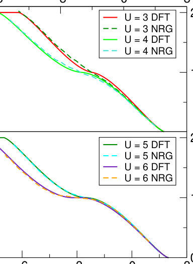
<figcaption class="paper-figure-caption"><b>Fig 1.</b> Figure 1: Left panel: Hxc potentials vHxc(n) of Eqs. (12) and (13) in units of U for different values of U. Right panels: comparison of DFT densities obtained with our parametrization of vHxc with NRG densities of Ref. [8]. Upper right panel: U = 3 and U = 4, lower right panel: U = 5 and U = 6.</figcaption>
</figure>
<figure class="paper-figure-card">
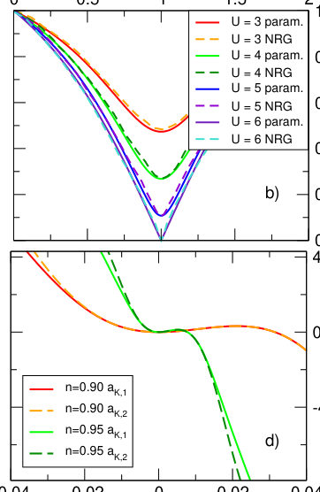
<figcaption class="paper-figure-caption"><b>Fig 2.</b> Figure 2: Panels a), c), and d): Exchange-correlation bias Vxc for U = 8 in different approximations. Panel a): Mott xc bias according to Eq. (52). Panel c) xc bias Vxc according to Eq. (53) with the two different forms of the Kondo prefactor of Eqs. (62) (solid lines) and (63) (dashed lines). Panel d): xc bias with corrected Kondo pref- actors. Panel b): quasiparticle weight Z as function of the density for various values of U from our parametrization (Eqs. (64) - (67)) compared to the NRG results of Ref. [8].</figcaption>
</figure>
<figure class="paper-figure-card">
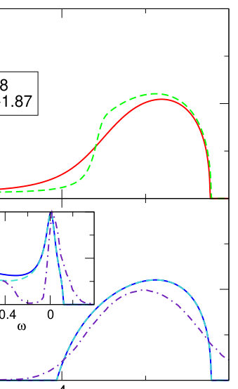
<figcaption class="paper-figure-caption"><b>Fig 3.</b> Figure 3: Spectral function of the Hubbard model on the Bethe lattice with infinite coordination for U = 8 and on-site energies v = −1.87 (which corresponds to a doping of δ = 1−n ≈0,02). Upper panel: i-DFT spectra obtained with the functional of Eq. (53) with the two uncorrected Kondo prefactors aK,1 and aK,2 (Eqs. (62) and (63), respectively). Lower panel: i-DFT spectra with the corrected Kondo prefactors of Eq. (68) as well as the NRG spectrum of Ref. [6]. The inset zooms in around the Kondo resonance.</figcaption>
</figure>
<figure class="paper-figure-card">
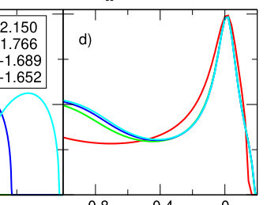
<figcaption class="paper-figure-caption"><b>Fig 4.</b> Figure 4: Spectral functions of the Hubbard model on the Bethe lattice with infinite coordination. Panel a): i-DFT spectra for U = 14 and onsite energy v = −12.2 obtained with the corrected Kondo prefactors of Eq. (69) compared with the NRG spectrum of Ref. [45]. In panels b) to d) only the prefactor acorr. K,2 is used. Panel b): i-DFT spectral functions for U = 8 for different onsite energies v. Panel c): i-DFT spectral functions for different values of U. The onsite energies were chosen such that for all U the doping is the same at δ = 1 −n = 0.03. Panel d): same as c) but zoomed in at the Kondo resonance.</figcaption>
</figure>
<figure class="paper-figure-card">
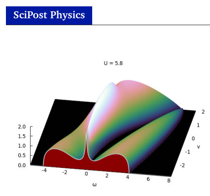
<figcaption class="paper-figure-caption"><b>Fig 5.</b> Figure 5: Spectral function as a function of frequency ω and gate v for U = 5.8 &lt; Uc just in the metallic phase (left) and for U = 8.0 &gt; Uc deep in the Mott phase (right).</figcaption>
</figure>
</div>

<p><strong>Summary.</strong> This work develops and applies a specialized version of Density Functional Theory (i-DFT) to model the Mott metal-insulator transition in the Hubbard model. By connecting the theory to many-body concepts like the quasiparticle weight, the authors show that i-DFT can accurately predict the opening and closing of the Mott gap as the electron doping changes. This advances the theoretical understanding of strongly correlated materials using non-equilibrium quantum methods.</p>
<p><strong>Why it may be interesting.</strong> While focused on condensed matter, the development of a functional theory (i-DFT) that bridges equilibrium DFT with non-equilibrium transport and strong correlations is a powerful methodological tool applicable to open quantum systems where current/bias effects are crucial.</p>
<details>
<summary>Detailed structure</summary>
<p><strong>Main problem.</strong> The paper addresses the challenge of theoretically describing the doping-driven Mott transition, a fundamental phase transition driven by strong electronic interactions.</p>
<p><strong>Main result.</strong> The authors successfully demonstrate that the doping-driven Mott transition in the Hubbard model can be captured using the steady-state density functional theory (i-DFT) framework.</p>
<p><strong>Method.</strong> The core method involves extending DFT to steady-state conditions (i-DFT) and deriving necessary approximations for the exchange-correlation (xc) bias by connecting it to the quasiparticle weight via Fermi-liquid theory.</p>
<p><strong>Model / system.</strong> The study uses the single-band Hubbard model, analyzed in the limit of infinite coordination (Bethe lattice), which allows mapping to a local Anderson Impurity Model (AIM) central to DMFT.</p>
<p><strong>Key observables.</strong> Spectral function A(omega), Mott gap, quasiparticle weight, and the xc bias.</p>
<p><strong>Important parameters / regimes.</strong> Interaction strength U, doping level (n), and the critical gate voltage (vc).</p>
<p><strong>Assumptions / limitations.</strong> The approach assumes the validity of connecting the xc bias to the quasiparticle weight via Fermi-liquid theory, and it relies on the infinite coordination limit ($K 	o \infty$).</p>
<p><strong>Figures summary.</strong> Figures compare the spectral function in metallic and Mott regimes, showing the emergence and disappearance of quasiparticle peaks and the opening/closing of the Mott gap as doping changes.</p>
<p><strong>Paper structure.</strong> The paper develops the i-DFT formalism, parametrizes the Hxc potential using constraints from DMFT/NRG, and then applies the full framework to calculate the spectral function and diagnose the Mott transition across varying doping levels.</p>
</details>
<details>
<summary>Abstract</summary>
<p>The doping-driven Mott transition in the Hubbard model is described within the frame- work of steady-state density functional theory, or i-DFT. In order to access the many-body spectral function in i-DFT, an approximation for the exchange-correlation (xc) bias at arbitrary density and current is required. By using Fermi-liquid theory, a connection between the xc bias of i-DFT and the quasiparticle weight of many-body theory is derived and the results are employed to guide the construction of the approximation. Numerical results obtained with this functional demonstrate that the doping-driven Mott transition can indeed be captured with i-DFT.</p>
</details>
<p><sub><a href="#top">↑ back to top</a></sub></p>

<p><a id="paper-2608.20847"></a></p>
<h3 id="non-hermitian-sensing-via-end-to-end-greens-functions"><a href="http://arxiv.org/abs/2608.20847v1">Non-Hermitian sensing via end-to-end Green's functions</a></h3>
<p><strong>Authors:</strong> Hui-Qiang Liang, Yu-Shi Cheng, Guo-Fu Xu<br>
<strong>Type:</strong> theory · <strong>Category:</strong> other · <strong>PDF:</strong> <a href="https://arxiv.org/pdf/2608.20847v1">https://arxiv.org/pdf/2608.20847v1</a><br>
<strong>Analysis basis:</strong> full PDF text, analyzed in chunks
<strong>Topic relevance:</strong> <code>driven-dissipative phase transition</code> <strong>3/5</strong> · <code>Keldysh / 2PI / non-Gaussian methods</code> <strong>2/5</strong> · <code>analog quantum simulation</code> <strong>2/5</strong> · <code>methods for driven-dissipative</code> <strong>2/5</strong> · <code>non-equilibrium universality</code> <strong>2/5</strong> · <code>correlated / nonlocal dissipation</code> <strong>1/5</strong> · <code>quantum measurements</code> <strong>1/5</strong></p>
<div class="figure-strip-hint">↔ Scroll figures horizontally</div>
<div class="paper-figures-scroll">
<figure class="paper-figure-card">
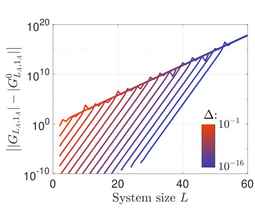
<figcaption class="paper-figure-caption"><b>Fig 1.</b> FIG. 1. Exponential scaling of |GLA,1| −|G0 LA,1| with the system size L of the coupled two-chain model. The relevant parameters are tR = 0.1, tL = 1 and ω = 0.7.</figcaption>
</figure>
<figure class="paper-figure-card">
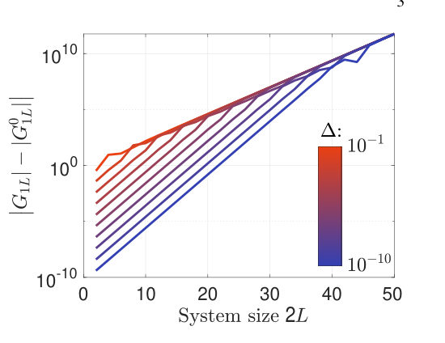
<figcaption class="paper-figure-caption"><b>Fig 2.</b> FIG. 2. Exponential scaling of the response discrepancy |GL,1| −|G0 L,1| versus the system size 2L in the one-band-chain-based non-Hermitian topological sensor. Parameters: tR = 1.5, tL = 0.5 and ω = 0.</figcaption>
</figure>
<figure class="paper-figure-card">
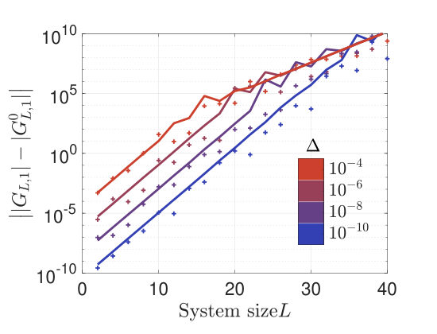
<figcaption class="paper-figure-caption"><b>Fig 3.</b> FIG. 4. Scaling of the Green’s function |GL,1| −|G0 L,1| of one band case, for various ∆, with disorder strength W = 0.2. The input and output are fixed to chain A. Data for a single disorder realiza- tion (marked by ”+”) are compared with the disorder-averaged result (line) over M = 104 realizations for each L. All other parameter are same as in Fig. 2.</figcaption>
</figure>
<figure class="paper-figure-card">
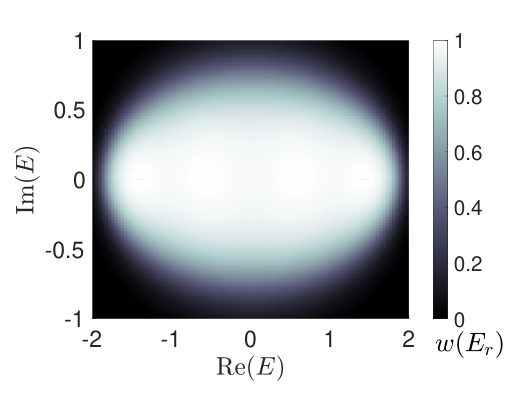
<figcaption class="paper-figure-caption"><b>Fig 4.</b> FIG. 3. The disordered spectrum winding number for chain A. The parameters are ∆= 10−7, L = 16. All other parameters are same as in Fig. 2.</figcaption>
</figure>
<figure class="paper-figure-card">
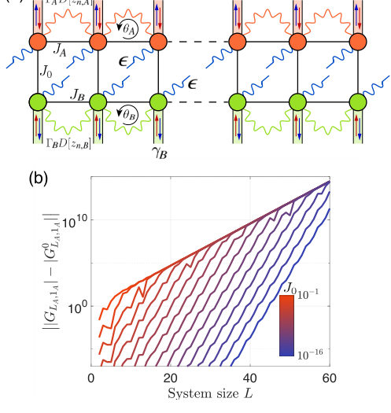
<figcaption class="paper-figure-caption"><b>Fig 5.</b> FIG. 5. (a) Driven-dissipative coupled chains consisting of 2N bosonic cavity modes, described by Eqs. (16). (b) Numerically sim- ulated results for the proposed setup. The relevant parameters are J = 0.75, θ = 0.75π, Γ = 0.5, ϵ = 2, and γA = γB = 1.</figcaption>
</figure>
</div>

<p><strong>Summary.</strong> This paper proposes a novel sensing scheme that achieves exponential sensitivity scaling by exploiting the non-Hermitian skin effect through end-to-end Green's function amplification. The enhanced sensitivity is shown to be robustly protected by the system's non-trivial spectral winding number, offering a pathway for building highly sensitive, noise-tolerant quantum sensors.</p>
<p><strong>Why it may be interesting.</strong> This work directly connects topological invariants (winding numbers) and spectral properties (NHSE) to a measurable physical enhancement (sensing), which is highly relevant for designing advanced quantum sensors in open quantum systems.</p>
<details>
<summary>Detailed structure</summary>
<p><strong>Main problem.</strong> The paper addresses the need for highly sensitive and noise-tolerant sensing mechanisms by leveraging the unique properties of non-Hermitian physics.</p>
<p><strong>Main result.</strong> They demonstrate an exponential sensitivity scaling of exp(αL) in sensing by utilizing the amplification inherent in end-to-end Green's functions, a signature of the non-Hermitian skin effect.</p>
<p><strong>Method.</strong> The analysis involves deriving the sensing response by calculating the discrepancy in end-to-end Green's functions, $\left|G_{L,1}(\Delta)
ight| - \left|G_{0L,1}
ight|$, using perturbation theory and transfer matrix methods.</p>
<p><strong>Model / system.</strong> The models analyzed include coupled two-chain Hatano-Nelson (HN) open chains and a single HN open chain with boundary coupling, which can be generalized to include disorder.</p>
<p><strong>Key observables.</strong> Sensing response, Green's function discrepancy, and the spectral winding number ($w(E_r)$).</p>
<p><strong>Important parameters / regimes.</strong> System size ($L$), coupling strength ($\Delta$), and the non-Hermitian topological phase.</p>
<p><strong>Assumptions / limitations.</strong> The perturbation $\hat{H}_\Delta$ is assumed to be weak, and the analysis often relies on approximations valid for large system sizes ($L \gg 1$).</p>
<p><strong>Figures summary.</strong> Figures illustrate the exponential scaling of the sensing response with system size for both the coupled two-chain and boundary-modification models, while also showing the breakdown of this scaling for very large systems.</p>
<p><strong>Paper structure.</strong> The paper develops the theory by defining the non-Hermitian Hamiltonian, deriving the Green's function response using perturbation theory, analyzing the scaling behavior via transfer matrices, and finally demonstrating the topological protection of the enhanced sensitivity.</p>
</details>
<details>
<summary>Abstract</summary>
<p>Sensing hinges on two key attributes: high sensitivity and resilience to noise. Here, we present a scheme that unites these features within a single framework. By harnessing the exponential amplification of end-to-end Green's functions-a direct signature of the non-Hermitian skin effect-our scheme achieves an exponential sensitivity scaling of exp(αL) with α a model-specific constant and L the system size. Notably, this enhanced sensitivity is protected by spectral winding numbers and endures under disorder when the non-Hermitian topological phase remains intact. We also explore its feasibility in synthetic non-Hermitian platforms, providing a pathway toward highly sensitive and noise-tolerant sensing.</p>
</details>
<p><sub><a href="#top">↑ back to top</a></sub></p>

<p><a id="paper-2608.21219"></a></p>
<h3 id="non-monotonic-dynamical-correlations-across-the-glass-crossover"><a href="http://arxiv.org/abs/2608.21219v1">Non-Monotonic Dynamical Correlations Across The Glass Crossover</a></h3>
<p><strong>Authors:</strong> Corentin C. L. Laudicina, Ilian Pihlajamaa, Liesbeth M. C. Janssen, Thomas Voigtmann, Tommaso Rizzo<br>
<strong>Type:</strong> theory · <strong>Category:</strong> disordered systems and neural networks · <strong>PDF:</strong> <a href="https://arxiv.org/pdf/2608.21219v1">https://arxiv.org/pdf/2608.21219v1</a><br>
<strong>Analysis basis:</strong> full PDF text, analyzed in chunks
<strong>Topic relevance:</strong> <code>Keldysh / 2PI / non-Gaussian methods</code> <strong>3/5</strong> · <code>non-equilibrium universality</code> <strong>3/5</strong> · <code>methods for driven-dissipative</code> <strong>2/5</strong> · <code>scars &amp; prethermalization</code> <strong>2/5</strong> · <code>analog quantum simulation</code> <strong>1/5</strong> · <code>driven-dissipative phase transition</code> <strong>1/5</strong></p>
<div class="figure-strip-hint">↔ Scroll figures horizontally</div>
<div class="paper-figures-scroll">
<figure class="paper-figure-card">
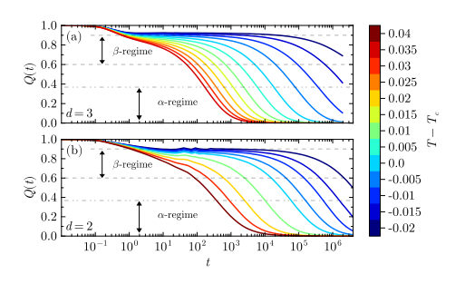
<figcaption class="paper-figure-caption"><b>Fig 1.</b> FIG. 1. Two-step relaxation dynamics across the mode-coupling crossover. Overlap function Q(t) at temperatures ranging from above to below Tc (left to right: decreasing temperature) for the three- (panel (a), N = 100 000 particles) and two-dimensional (panel (b), N = 10 000 particles) model glass formers. The char- acteristic two-step decay develops upon cooling, with an intermedi- ate plateau, the β-regime, becoming increasingly long-lived as Tc is approached. Arrows indicate the approximate boundaries of the β- and α-relaxation regimes as defined in the text. Temperatures are spaced as (T −Tc) ∈[−0.02, −0.015, . . . , 0.035] in (a) and (T −Tc) ∈[−0.02, −0.015, . . . , 0.0, 0.01, . . . ,...</figcaption>
</figure>
<figure class="paper-figure-card">
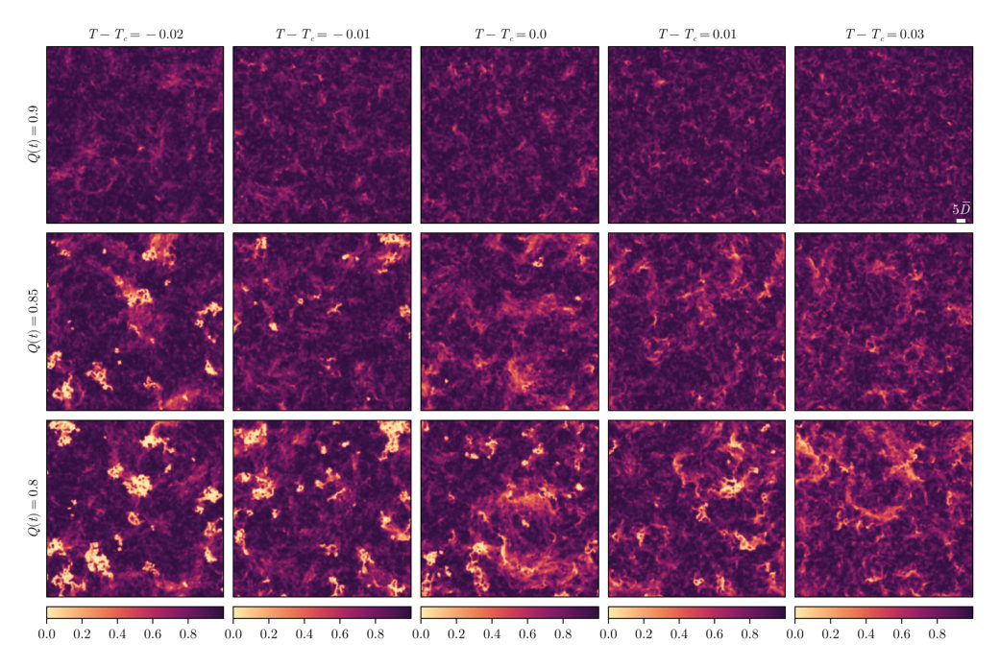
<figcaption class="paper-figure-caption"><b>Fig 2.</b> FIG. 2. Spatial maps of the coarse-grained mobility field µ(r, t) shown for the two-dimensional system considered in this work. Each column corresponds to a different temperature, while each row represents a distinct intrinsic time. Reading vertically reveals the temporal evolution of a single simulation at fixed temperature. Note that the mobility field is defined such that µ(r, t) = 1.0 indicates an immobile region and µ(r, t) = 0.0 a mobile one. A scale bar of size 5D is shown in the top-right panel.</figcaption>
</figure>
<figure class="paper-figure-card">
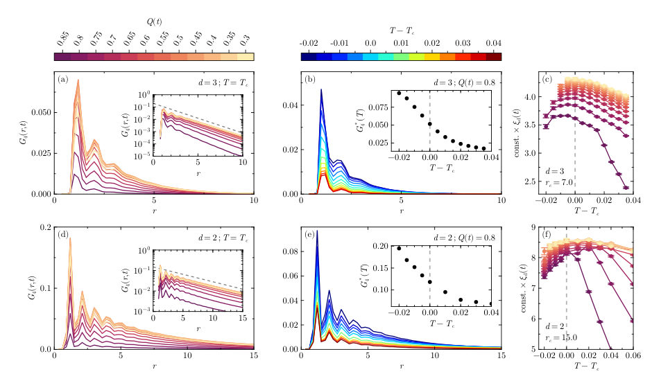
<figcaption class="paper-figure-caption"><b>Fig 3.</b> FIG. 3. (a) Spatial profiles of G4(r, t) at fixed temperature T = Tc for several intrinsic times in three dimensions (N = 100 000). The inset shows the same data on a semi-logarithmic scale, with dashed lines an exponential decay serving as a guide to the eye. The curves correspond to all material times indicated in the colorbar: Q(t) = 0.85, 0.08, . . . , 0.3. (b) Four-point correlation functions G4(r, t) at fixed intrinsic time Q(t) = 0.8 for varying temperatures T relative to Tc in three dimensions. The inset displays the corresponding maxima G∗ 4(T). The temperatures shown correspond to those shown in Fig. 1(a). (c) Dynamical correlation length ξd(t), computed from the second-moment...</figcaption>
</figure>
<figure class="paper-figure-card">
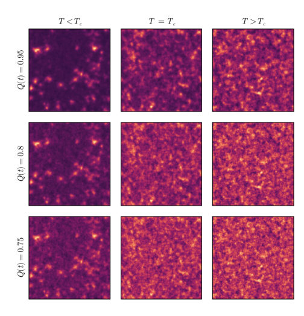
<figcaption class="paper-figure-caption"><b>Fig 4.</b> FIG. 4. SBR solutions in two dimensions for several temperatures (columns) and intrinsic times (rows). The spatial features of the field g(x, t) qualitatively mirror the simulated mobility maps, indicating that SBR captures the key dynamic heterogeneity in the β-regime near Tc. Note that the colorscheme is analogous to that used in Fig. 2, where dark purple indicates immobility and light yellow indicates mobility.</figcaption>
</figure>
<figure class="paper-figure-card">
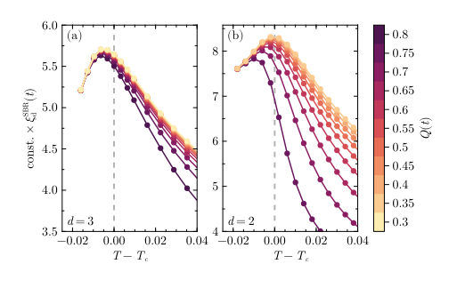
<figcaption class="paper-figure-caption"><b>Fig 5.</b> FIG. 5. SBR predictions for the dynamical correlation length ξSBR d (t) in (a) three and (b) two dimensions, obtained from the second-moment estimator Eq. (6) applied to GSBR 4 (r, t) de- fined in Eq. (10). Results are shown for intrinsic times Q ∈ [0.8, 0.75, . . . , 0.3] in (a) and Q ∈[0.8, 0.75, . . . , 0.4] in (b). The non-monotonic temperature dependence of ξSBR d (t) across Tc is re- produced across all intrinsic times and in both dimensions.</figcaption>
</figure>
</div>

<p><strong>Summary.</strong> This work reveals that the dynamical correlation length in supercooled liquids exhibits non-monotonic behavior in the $eta$-relaxation regime across the glass crossover temperature ($T_c$). By extending Mode-Coupling Theory, the authors provide direct spatial evidence supporting an avoided dynamical transition picture, suggesting a fundamental change in the nature of local particle motion below $T_c$.</p>
<p><strong>Why it may be interesting.</strong> The focus on non-equilibrium dynamics, glassy physics, and the extension of mean-field theories (MCT) to capture finite-dimensional effects is highly relevant to understanding complex, slow dynamics in many-body quantum systems.</p>
<details>
<summary>Detailed structure</summary>
<p><strong>Main problem.</strong> The study investigates the temperature dependence of the dynamical correlation length across the glass crossover temperature ($T_c$), challenging the assumption that dynamics are only governed by $\alpha$-relaxation.</p>
<p><strong>Main result.</strong> The dynamical correlation length in the $eta$-relaxation regime shows a striking non-monotonic dependence, peaking near $T_c$ and decreasing upon further cooling, indicating a crossover from extended to localized motion.</p>
<p><strong>Method.</strong> The analysis uses molecular dynamics simulations combined with stochastic $eta$-relaxation theory, extending Mode-Coupling Theory (MCT) beyond mean-field predictions.</p>
<p><strong>Model / system.</strong> The system studied is a supercooled liquid, modeled in both two and three dimensions, exhibiting structural relaxation dynamics.</p>
<p><strong>Key observables.</strong> Dynamical correlation length ($\xi_d(t)$), Overlap function $Q(t)$, and the spatially resolved mobility field $\mu(\mathbf{r}, t)$.</p>
<p><strong>Important parameters / regimes.</strong> The mode-coupling crossover temperature ($T_c$), the $eta$-relaxation regime, and the dimensionality ($d=2, 3$).</p>
<p><strong>Assumptions / limitations.</strong> The theory relies on stochastic $eta$-relaxation theory to capture the avoided dynamical transition predicted beyond mean-field MCT.</p>
<p><strong>Figures summary.</strong> Figures illustrate the two-step decay of the overlap function $Q(t)$ across $T_c$ and spatial maps of the mobility field $\mu(\mathbf{r}, t)$ showing heterogeneous structures.</p>
<p><strong>Paper structure.</strong> The paper first establishes the anomalous non-monotonic behavior of $\xi_d$ in the $eta$-regime, contrasting it with previous $\alpha$-regime studies. It then develops the theoretical framework using stochastic $eta$-relaxation theory to quantitatively capture this crossover, providing spatial evidence for the avoided-transition picture.</p>
</details>
<details>
<summary>Abstract</summary>
<p>The dramatic slowing down of structural relaxation in supercooled liquids is accompanied by the emergence of dynamic heterogeneity. A monotonically increasing dynamical correlation length, measured at the $α$-timescale, is one of the remarkable features of this phenomenon. Here we show that this picture is incomplete: the dynamical correlation length measured in the $β$-relaxation regime exhibits a striking non-monotonic temperature dependence, reaching a maximum near the mode-coupling crossover temperature $T_c$ and decreasing upon further cooling, even as local dynamical fluctuations continue to intensify. This behavior suggests a crossover from spatially extended, maximally cooperative motion near $T_c$ to increasingly compact and localized relaxation events below it. We demonstrate that this evolution is quantitatively captured by stochastic beta-relaxation theory, an extension of mode-coupling theory beyond mean-field that explicitly predicts an avoided dynamical transition in finite dimensions. Our results provide the first direct spatial evidence in favor of the avoided-transition picture of the mode-coupling crossover, and establish the peak of the $β$-regime correlation length as a robust indicator of the mode-coupling crossover.</p>
</details>
<p><sub><a href="#top">↑ back to top</a></sub></p>

<p><a id="paper-2608.20895"></a></p>
<h3 id="anisotropic-dynamical-reconstruction-of-quantum-geometry-in-quenched-chern-insulators"><a href="http://arxiv.org/abs/2608.20895v1">Anisotropic dynamical reconstruction of quantum geometry in quenched Chern insulators</a></h3>
<p><strong>Authors:</strong> Nan Li, Zhiyong Liu, Zhaoxin Liang, Ying Hu<br>
<strong>Type:</strong> theory · <strong>Category:</strong> other · <strong>PDF:</strong> <a href="https://arxiv.org/pdf/2608.20895v1">https://arxiv.org/pdf/2608.20895v1</a><br>
<strong>Analysis basis:</strong> full PDF text, analyzed in chunks
<strong>Topic relevance:</strong> <code>non-equilibrium universality</code> <strong>3/5</strong> · <code>Keldysh / 2PI / non-Gaussian methods</code> <strong>2/5</strong> · <code>methods for driven-dissipative</code> <strong>2/5</strong> · <code>scars &amp; prethermalization</code> <strong>2/5</strong> · <code>analog quantum simulation</code> <strong>1/5</strong> · <code>quantum measurements</code> <strong>1/5</strong></p>
<div class="figure-strip-hint">↔ Scroll figures horizontally</div>
<div class="paper-figures-scroll">
<figure class="paper-figure-card">
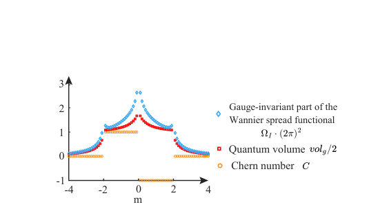
<figcaption class="paper-figure-caption"><b>Fig 1.</b> FIG. 1. Quantum geometry in a static Chern insulator. The Chern number C, quantum volume volg, and gauge-invariant Wannier spread functional ΩI of the ground state of the mas- sive Dirac model are shown for various mass m.</figcaption>
</figure>
<figure class="paper-figure-card">
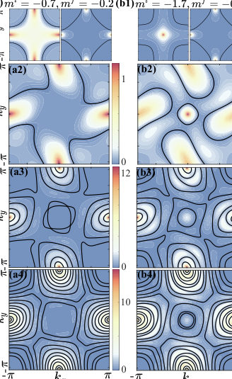
<figcaption class="paper-figure-caption"><b>Fig 2.</b> FIG. 2. Time evolution of the quantum-volume density p</figcaption>
</figure>
<figure class="paper-figure-card">
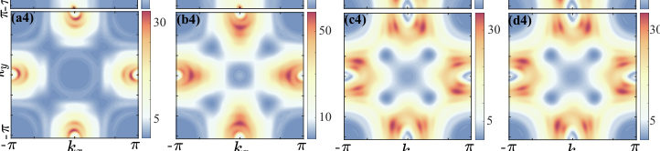
<figcaption class="paper-figure-caption"><b>Fig 3.</b> FIG. 3. The time evolution of the metric trace Tr G(k, t) corresponding to Fig. 2. Parameters are the same as those in corresponding panels in Fig. 2.</figcaption>
</figure>
<figure class="paper-figure-card">
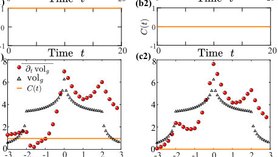
<figcaption class="paper-figure-caption"><b>Fig 4.</b> FIG. 4. Time evolution of global quantum geometry and the Chern number in a quenched Chern insulator. (a1)-(a2) Time evolution of the gauge-invariant Wannier spread functional ΩI(t) (red diamonds) and quantum volume volg(t) (black squares), calculated from Eqs. (11) and (12), respectively. Solid lines denote fits using ΩI/(2π)2 = at2 + bt + c (red) and volg = αt + e (black). Insets show log-log plots of ΩI/(2π)2</figcaption>
</figure>
<figure class="paper-figure-card">
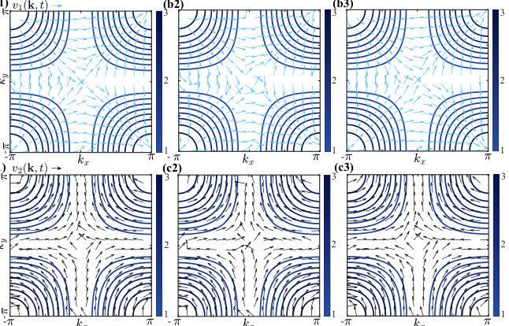
<figcaption class="paper-figure-caption"><b>Fig 5.</b> FIG. 5. Anisotropic dynamical reconstruction of quantum geometry. The three columns respectively correspond to three distinct quenches, which share identical mf = −1 but (a1) mi = −3.2, (a2) mi = −1.7, and (a3) mi = 1. (a1)-(a3) Time evolution of the metric eigenvalues λ1,2(k, t) at k = (π/5, π/2). (b1)-(b3) Long-time (t = 20) distributions of the principal axis v1 associated with the larger metric eigenvalue λ1 [c.f. Eq. (15)]. Arrows indicate the orientation (cos(θk(t)/2), sin(θk(t)/2)). (c1)-(c3) Corresponding distributions of the principal axis v2 at t = 20 associated with the smaller metric eigenvalue λ2. Arrows indicate the orientation (−sin(θk(t)/2), cos(θk(t)/2)). respectively. In...</figcaption>
</figure>
</div>

<p><strong>Summary.</strong> This work analyzes how the quantum geometry of a Chern insulator evolves after a sudden quench, finding that while the topological invariant (Chern number) is conserved, the quantum metric undergoes a distinct anisotropic reconstruction. This reorganization is driven by momentum-dependent relative dynamical phases, causing the metric's principal axes to align with the energy-gradient and constant-energy contour directions of the final Hamiltonian.</p>
<p><strong>Why it may be interesting.</strong> The concept of dynamically selected geometric structures (like the principal axes of the metric) that are distinct from the static ground state is highly relevant for understanding non-equilibrium quantum dynamics in condensed matter systems.</p>
<details>
<summary>Detailed structure</summary>
<p><strong>Main problem.</strong> The study investigates how the quantum metric of a coherently evolving quantum state reorganizes during unitary dynamics, particularly following a sudden quench, contrasting this with the conserved topological invariant (Chern number).</p>
<p><strong>Main result.</strong> The quantum metric undergoes an anisotropic dynamical reconstruction, where the principal axes align with the energy-gradient and the tangent direction of the constant-energy contours of the post-quench Hamiltonian.</p>
<p><strong>Method.</strong> The authors calculate the time evolution of the quantum metric tensor and its principal axes using the time-dependent polarization vector derived from the quench dynamics.</p>
<p><strong>Model / system.</strong> The system is modeled using a two-dimensional (2D) massive Dirac model, serving as a paradigmatic Chern insulator, subjected to a sudden quench from an initial to a final Hamiltonian.</p>
<p><strong>Key observables.</strong> Quantum metric tensor ($G_{\mu
u}(\mathbf{k}, t)$), quantum volume ($    ext{vol}_g$), Wannier spread ($\Omega_I$), and the Chern number ($C(t)$).</p>
<p><strong>Important parameters / regimes.</strong> The quench time and the parameters defining the initial and final Hamiltonians (e.g., mass parameter $m$).</p>
<p><strong>Assumptions / limitations.</strong> The analysis relies on unitary dynamics and the assumption that the system can be described by the time-dependent polarization vector $\hat{n}(\mathbf{k}, t)$.</p>
<p><strong>Figures summary.</strong> Figures illustrate the static quantum geometry (Chern number, volume, Wannier spread) and show the time evolution of the quantum-volume density, demonstrating the anisotropic growth of the metric components.</p>
<p><strong>Paper structure.</strong> The paper first establishes the conservation of the Chern number while analyzing the time evolution of the quantum metric. It then details the anisotropic reconstruction, showing how the principal axes align with specific geometric directions dictated by the post-quench Hamiltonian, which is attributed to momentum-dependent relative dynamical phases.</p>
</details>
<details>
<summary>Abstract</summary>
<p>Under unitary dynamics, the Chern number of an evolving quantum state remains conserved even when a quench drives the Hamiltonian across a topological phase transition. In sharp contrast, we reveal an anisotropic dynamical reconstruction of the quantum metric. Following a sudden quench in a two-dimensional Chern insulator, the metric develops a principal frame in which one eigenvalue grows in time whereas the other remains nearly unchanged. At long times, the associated axes align with the energy-gradient direction and the tangent direction of the constant-energy contours of the post-quench Hamiltonian, respectively. This dynamically selected frame is distinct from that of the static post-quench ground-state metric. We identify momentum-dependent relative dynamical phases as its origin: they enhance the distinguishability of neighboring states separated along the energy-gradient direction, while states along an equal-energy contour remain nearly phase locked. Consequently, local and global metric observables acquire characteristic long-time signatures of the post-quench Hamiltonian. Our results establish a nonequilibrium mechanism by which coherent dynamics reorganizes quantum geometry, suggesting new possibilities for its dynamical control.</p>
</details>
<p><sub><a href="#top">↑ back to top</a></sub></p>

<p><a id="paper-2608.20889"></a></p>
<h3 id="characterizing-multimode-effects-in-a-guided-matterwave-gyroscope"><a href="http://arxiv.org/abs/2608.20889v1">Characterizing Multimode Effects in a Guided Matterwave Gyroscope</a></h3>
<p><strong>Authors:</strong> Jessica K. Eastman, Ellen Zheng, Stuart S. Szigeti, Simon A. Haine<br>
<strong>Type:</strong> theory · <strong>Category:</strong> quantum gases · <strong>PDF:</strong> <a href="https://arxiv.org/pdf/2608.20889v1">https://arxiv.org/pdf/2608.20889v1</a><br>
<strong>Analysis basis:</strong> full PDF text, analyzed in chunks
<strong>Topic relevance:</strong> <code>Keldysh / 2PI / non-Gaussian methods</code> <strong>3/5</strong> · <code>analog quantum simulation</code> <strong>3/5</strong> · <code>interference shaping light</code> <strong>2/5</strong> · <code>methods for driven-dissipative</code> <strong>2/5</strong> · <code>quantum measurements</code> <strong>1/5</strong></p>
<div class="figure-strip-hint">↔ Scroll figures horizontally</div>
<div class="paper-figures-scroll">
<figure class="paper-figure-card">
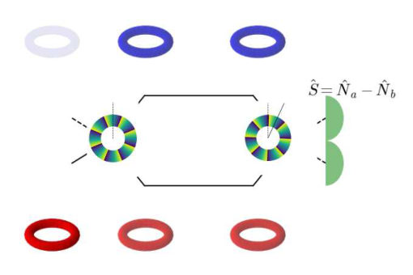
<figcaption class="paper-figure-caption"><b>Fig 1.</b> FIG. 1. Schematic for the matterwave vortex gyroscope. The atoms are initiated in the ground state of the toroidal trap. A two-photon Raman transition coherently transfers half the population into a second internal state and a laser beam with a transverse phase profile imparts Orbital Angular Momen- tum (OAM) to the atoms. As a result we have a two com- ponent BEC where the two components are counter-rotating with angular momentum ±lℏfor integer l. After some inter- rogation time, there will be a phase difference between the two components. A second OAM laser pulse is applied and a final readout of population difference between the two com- ponents gives a measured rotation rate.</figcaption>
</figure>
<figure class="paper-figure-card">
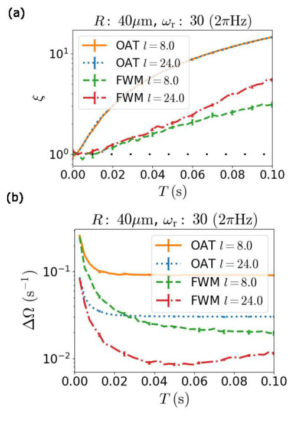
<figcaption class="paper-figure-caption"><b>Fig 2.</b> FIG. 2. (a) Degradation factor ξ and (b) rotation sensitivity ∆Ωas a function of the interrogation time T in the regime dominated by OAT dynamics (l = 8 orange line, l = 24 blue dots) and the FWM regime (l = 8 green dash, l = 24 red dash- dots) for trapping parameters {R = 40µm, ωr/2π = 30Hz}. The ideal non-interacting case gives ξ = 1 for all time. Error bars (plotted every 4 points) give the standard error in the mean over 960 trajectories.</figcaption>
</figure>
<figure class="paper-figure-card">
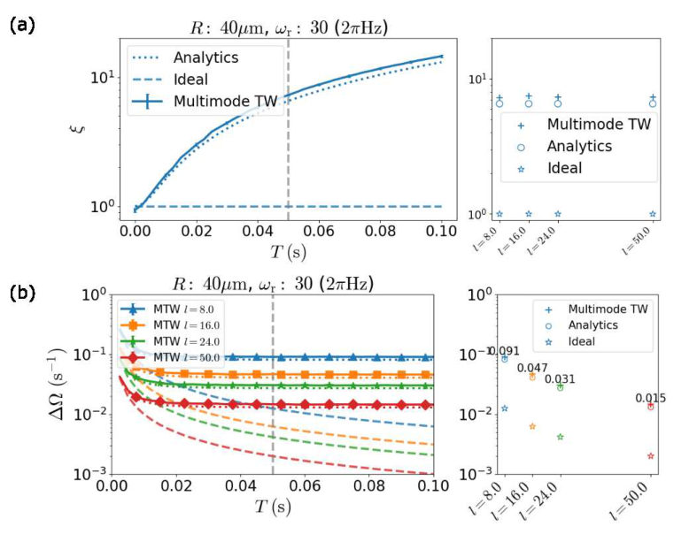
<figcaption class="paper-figure-caption"><b>Fig 3.</b> FIG. 3. (a) Rotation sensitivity as a function of interrogation time T (left) and the corresponding asymptotic limit of sensitivity at T = 0.05s (right) for OAT for (l = 8, 16, 24 and 50) and trapping parameters {R = 40µm, ωr/2π = 30 Hz}. The non- interacting ideal case is also plotted for each (dashed lines). (b) Corresponding degradation factor ξ (which is kick independent). The error bar plot corresponds to the multimode TW results with error given by standard error in the mean from 960 sampled trajectories. The two-mode analytics is given for each charge by the dotted lines. Both the multimode TW result and the two-mode analytics are plotted on the right plot.</figcaption>
</figure>
<figure class="paper-figure-card">
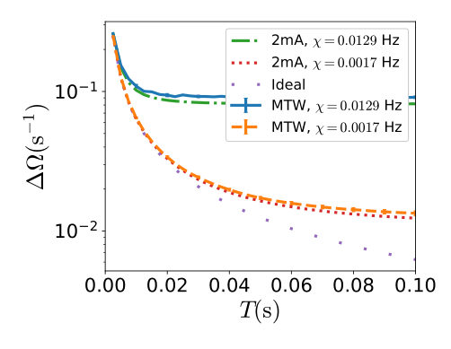
<figcaption class="paper-figure-caption"><b>Fig 4.</b> FIG. 4. Rotation sensitivity for the OAT l = 8 case for Multimode TW (MTW) and two-mode analytics (2mA) for the two sets of parameters R = 40µm, ωr/2π = 30 Hz, χ = 0.0129 (MTW - blue solid line, 2mA - green dot-dashed) and R = 200µm, ωr/2π = 10 Hz, χ = 0.0017 (MTW - orange dashed, 2mA - red dotted). The ideal, non-interacting case is also plotted (purple dotted with larger spacing).</figcaption>
</figure>
<figure class="paper-figure-card">
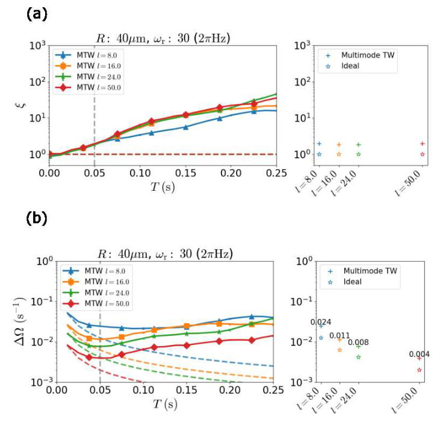
<figcaption class="paper-figure-caption"><b>Fig 5.</b> FIG. 5. (a) Rotation sensitivity ∆Ωas a function of interrogation time T (left) and the corresponding minimum at T = 0.05s (right) for Four Wave Mixing for (l = 8, 16, 24 and 50) and the set of trapping parameters (R = 40µm, ωr/2π = 30 Hz). (b) Corresponding degradation factors. The non-interacting ideal case is also plotted for each (dashed lines). The error bar plot corresponds to the multimode TW results with error given by standard error in the mean from 960 sampled trajectories. Plotted on a log scale for ∆Ω.</figcaption>
</figure>
</div>

<p><strong>Summary.</strong> This theoretical work investigates a matterwave vortex gyroscope using a two-component BEC in a toroidal trap. By employing advanced quantum simulations, the authors quantify how interatomic interactions cause performance degradation via phase diffusion and four-wave mixing. The results establish the gyroscope's superior sensitivity scaling compared to traditional Sagnac interferometers.</p>
<p><strong>Why it may be interesting.</strong> It provides a detailed, quantum-level analysis of a novel quantum sensor, moving beyond mean-field approximations to quantify fundamental noise sources in BEC systems.</p>
<details>
<summary>Detailed structure</summary>
<p><strong>Main problem.</strong> The paper characterizes the multimode quantum effects that degrade the performance of a matterwave vortex gyroscope.</p>
<p><strong>Main result.</strong> The vortex gyroscope demonstrates superior scaling and robustness compared to guided Sagnac interferometers, and the degradation is governed by phase diffusion and four-wave mixing mechanisms.</p>
<p><strong>Method.</strong> The study employs fully quantum multimode simulations using the truncated Wigner (TW) approach to model beyond mean-field dynamics.</p>
<p><strong>Model / system.</strong> The system is a two-component Bose-Einstein condensate (BEC) confined in a toroidal potential, forming a matterwave vortex gyroscope. The dynamics are governed by a Hamiltonian including single-particle, interaction, and laser-pulse coupling terms.</p>
<p><strong>Key observables.</strong> Rotation rate ($\Omega$), degradation factor ($\xi = \Delta\Omega / \Delta\Omega_{SQL}$), and mode populations (for OAT and FWM).</p>
<p><strong>Important parameters / regimes.</strong> Intercomponent scattering length ($a_{ij}$), trapping parameters, and the relative strength of OAT vs. FWM coupling.</p>
<p><strong>Assumptions / limitations.</strong> The analysis relies on the TW approach to capture quantum fluctuations, and dimensional reduction techniques (Gaussian ansatz) are used to derive effective 2D models.</p>
<p><strong>Figures summary.</strong> Figures illustrate the setup (toroidal trap, OAM transfer), the evolution of mode populations due to OAT and FWM, and the comparison with the non-interacting guided Sagnac interferometer.</p>
<p><strong>Paper structure.</strong> The paper first establishes the physical system and the need for quantum simulation methods. It then derives effective 2D models via variational minimization, analyzes the Hamiltonian terms ($\hat{H}_{OAT}$ and $\hat{H}_{FWM}$), and finally simulates the evolution to quantify performance degradation.</p>
</details>
<details>
<summary>Abstract</summary>
<p>We theoretically investigate the performance of a compact matterwave vortex gyroscope formed by a two-component Bose-Einstein condensate in a toroidal potential. Unlike conventional atomic gyroscopes that rely on the Sagnac effect, the topological stability of the vortex state yields rotation sensitivity independent of the enclosed area, making the device robust against geometric drifts. Using fully quantum multimode simulations, we quantify two interaction-driven mechanisms that degrade performance: phase diffusion from one-axis-twisting and four-wave mixing from intercomponent scattering. We identify regimes where tuning interaction and trapping parameters produces a trade-off between these effects, and find that reducing the intercomponent scattering length can counterintuitively worsen sensitivity. Finally, we compare the vortex gyroscope to a guided Sagnac interferometer, demonstrating superior scaling, establishing it as a promising candidate for compact precision rotation sensing.</p>
</details>
<p><sub><a href="#top">↑ back to top</a></sub></p>

<p><a id="paper-2608.20623"></a></p>
<h3 id="aging-phase-diagram-and-exact-asymptotic-energies-of-mixed-spherical-spin-glasses"><a href="http://arxiv.org/abs/2608.20623v1">Aging Phase Diagram and Exact Asymptotic Energies of Mixed Spherical Spin Glasses</a></h3>
<p><strong>Authors:</strong> Johannes Lang, Vincenzo Citro, Luca Leuzzi, Federico Ricci-Tersenghi<br>
<strong>Type:</strong> theory · <strong>Category:</strong> disordered systems and neural networks · <strong>PDF:</strong> <a href="https://arxiv.org/pdf/2608.20623v1">https://arxiv.org/pdf/2608.20623v1</a><br>
<strong>Analysis basis:</strong> full PDF text, analyzed in chunks
<strong>Topic relevance:</strong> <code>non-equilibrium universality</code> <strong>3/5</strong> · <code>Keldysh / 2PI / non-Gaussian methods</code> <strong>2/5</strong> · <code>scars &amp; prethermalization</code> <strong>2/5</strong> · <code>analog quantum simulation</code> <strong>1/5</strong> · <code>driven-dissipative phase transition</code> <strong>1/5</strong> · <code>methods for driven-dissipative</code> <strong>1/5</strong></p>
<div class="figure-strip-hint">↔ Scroll figures horizontally</div>
<div class="paper-figures-scroll">
<figure class="paper-figure-card">
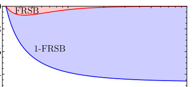
<figcaption class="paper-figure-caption"><b>Fig 1.</b> Figure 1. Non-equilibrium phase diagram of the (2+s) models quenched from infinite to zero temperature, with s shown on a logarithmic scale. The blue and red lines are the 1-RSB–1- FRSB and 1-FRSB–FRSB transitions given by Eqs. (10) and (12). In the FRSB phase, gradient flow reaches the algorith- mic bound Ealg.</figcaption>
</figure>
<figure class="paper-figure-card">
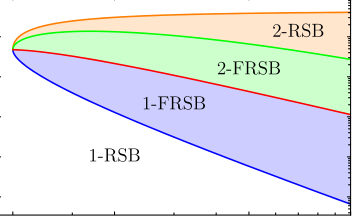
<figcaption class="paper-figure-caption"><b>Fig 2.</b> Figure 2. Non-equilibrium phase diagram of the (3 + s) mod- els, plotted as 1 −λ versus s on logarithmic axes. Increas- ing λ (from top to bottom) yields the sequence 1-RSB, 2- RSB, 2-FRSB, 1-FRSB, and reentrant 1-RSB. The critical lines λ1-2 (orange), λ2-2F (green) and λ2F-1F (red) are deter- mined numerically, while λ1F-1 (blue) is given analytically by Eq. (A.26). All four lines meet at s = 10 and 1−λ = 1/21. For s &lt; 10, the asymptotic solution is 1-RSB for every λ ∈[0, 1].</figcaption>
</figure>
<figure class="paper-figure-card">
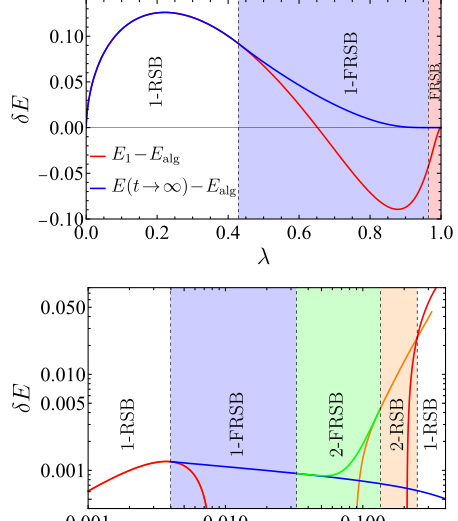
<figcaption class="paper-figure-caption"><b>Fig 3.</b> Figure 3. Asymptotic energies relative to the algorithmic bound Ealg. Top: physical energy E∞−Ealg (blue) and con- tinued marginal 1-RSB energy E1 −Ealg (red) for the (2 + 9) model. The dashed lines mark λ1-1F = 3/7 and λ1F-F ≃0.964. The 1-FRSB solution solves the paradox of having E1 &lt; Ealg for λ ≳0.65. In the FRSB phase, E∞= Ealg. Bottom: energies of the 1-RSB (red), 1-FRSB (blue), 2-FRSB (green), and 2-RSB (orange) solutions of the (3 + 15) model, plotted against 1−λ. Each branch is shown over the domain in which the corresponding asymptotic solution exists. The physical energy is their upper envelope, which remains strictly above Ealg for any λ value. The dashed lines mark the...</figcaption>
</figure>
<figure class="paper-figure-card">
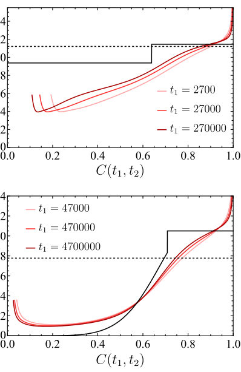
<figcaption class="paper-figure-caption"><b>Fig 4.</b> Figure 4. Test of the asymptotic solutions against numeri- cal integration of the full dynamical equations [41]. Colored curves show X(t1, t2) = R(t1, t2)/∂t2C(t1, t2) versus C(t1, t2) for increasing t1. Black lines are the parameter-free asymp- totic predictions; dashed lines show the marginal 1-RSB val- ues Xmg. Top: (3+15) model at λ = 0.8 in the 2-RSB phase, with X2 ≃0.94 for C ≲0.64, X1 ≃1.15 for C ≳0.64, and Xmg ≃1.12. Bottom: (2 + 9) model at λ = 0.9 in the 1- FRSB phase, with a high-correlation plateau X1 ≃1.05 and Xmg ≃0.78. In both panels, the finite-time results drift to- ward the predicted asymptotic form.</figcaption>
</figure>
</div>

<p><strong>Summary.</strong> This work theoretically maps the aging phase diagram for mixed spherical spin glasses quenched to zero temperature. By solving asymptotic dynamical equations, the authors classify various aging states based on the interaction mixture. The research provides exact expressions for the asymptotic energy, comparing it to the theoretical lower bound set by polynomial-time algorithms.</p>
<p><strong>Why it may be interesting.</strong> The rigorous theoretical framework for characterizing non-equilibrium dynamics in complex energy landscapes, like those found in spin glasses, provides deep insights into relaxation processes relevant to many-body quantum systems.</p>
<details>
<summary>Detailed structure</summary>
<p><strong>Main problem.</strong> The paper determines the aging phase diagram and calculates the exact asymptotic energies for mixed spherical spin glasses quenched to zero temperature.</p>
<p><strong>Main result.</strong> The phase diagram exhibits complex transitions between aging states (e.g., 1-RSB, 2-RSB, FRSB) depending on the interaction mixture, and the asymptotic energy is compared against the algorithmic lower bound.</p>
<p><strong>Method.</strong> The analysis involves solving the asymptotic dynamical equations derived from Cugliandolo and Kurchan's theory, utilizing concepts from Replica Symmetry Breaking (RSB) hierarchy.</p>
<p><strong>Model / system.</strong> The system is a mixed spherical $(p+s)$-spin glass, characterized by a random Gaussian energy Hamiltonian combining pairwise ($p$) and higher-order ($s$) interactions.</p>
<p><strong>Key observables.</strong> Asymptotic energy density ($E_\infty$), effective temperature ($X[C]$), and the classification of aging states (e.g., 1-RSB, FRSB).</p>
<p><strong>Important parameters / regimes.</strong> Mixing weight ($\lambda$), interaction orders ($p, s$), and the quench temperature ($T=0$).</p>
<p><strong>Assumptions / limitations.</strong> The analysis assumes ultrametricity and local equilibration at scale endpoints, and separates dynamics into stationary and aging components.</p>
<p><strong>Figures summary.</strong> Figures illustrate the non-equilibrium phase diagrams for $(2+s)$ and $(3+s)$ models, showing transition lines, and also show numerical convergence of correlation functions.</p>
<p><strong>Paper structure.</strong> The paper develops the asymptotic equations for the correlation and response functions, derives the energy density from stationary and aging contributions, and maps out the phase diagram based on solving these equations across different interaction mixtures.</p>
</details>
<details>
<summary>Abstract</summary>
<p>We determine the aging phase diagram of mixed spherical $(p+s)$-spin glasses quenched from random configurations to zero temperature. Solving the asymptotic dynamical equations of Cugliandolo and Kurchan, we find transitions between aging states with one, two, and continuously many effective temperatures, including phases in which discrete and continuous hierarchies coexist. We obtain analytic expressions for the energies reached asymptotically by the dynamics. In models combining pairwise and higher-order interactions, and sufficiently separated interaction orders ($s>3$), a fully continuous phase exists, where the gradient descent relaxation converges to the algorithmic energy lower bound. Instead, in mixed models with only high-order interactions ($p\ge3$) the energy relaxation remains strictly above it. Numerical integration of the dynamical equations is consistent with the predicted two-step and mixed discrete--continuous aging states.</p>
</details>
<p><sub><a href="#top">↑ back to top</a></sub></p>

<p><a id="paper-2608.20833"></a></p>
<h3 id="coherence-based-identification-of-carbon-based-spin-qubits-in-hexagonal-boron-nitride-from-first-principles"><a href="http://arxiv.org/abs/2608.20833v1">Coherence-Based Identification of Carbon-Based Spin Qubits in Hexagonal Boron Nitride from First Principles</a></h3>
<p><strong>Authors:</strong> Hyeonsu Kim, Jaewook Lee, Huijin Park, Hosung Seo<br>
<strong>Type:</strong> theory · <strong>Category:</strong> quantum information and computing · <strong>PDF:</strong> <a href="https://arxiv.org/pdf/2608.20833v1">https://arxiv.org/pdf/2608.20833v1</a><br>
<strong>Analysis basis:</strong> full PDF text, analyzed in chunks
<strong>Topic relevance:</strong> <code>QC/QI experiment</code> <strong>3/5</strong> · <code>quantum measurements</code> <strong>2/5</strong> · <code>Keldysh / 2PI / non-Gaussian methods</code> <strong>1/5</strong> · <code>analog quantum simulation</code> <strong>1/5</strong> · <code>correlated / nonlocal dissipation</code> <strong>1/5</strong> · <code>methods for driven-dissipative</code> <strong>1/5</strong></p>
<div class="figure-strip-hint">↔ Scroll figures horizontally</div>
<div class="paper-figures-scroll">
<figure class="paper-figure-card">
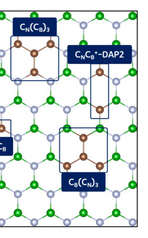
<figcaption class="paper-figure-caption"><b>Fig 1.</b> Figure 1. Crystal structures of the seven carbon-related defects in h-BN. Brown spheres are carbon,</figcaption>
</figure>
<figure class="paper-figure-card">
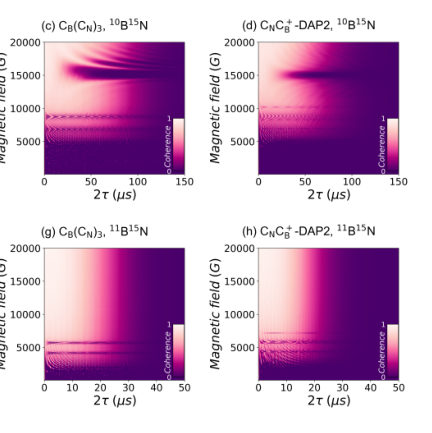
<figcaption class="paper-figure-caption"><b>Fig 2.</b> Figure 2. Hahn-echo coherence colormaps as a function of free evolution time (2τ) and external magnetic</figcaption>
</figure>
<figure class="paper-figure-card">
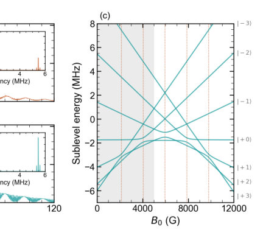
<figcaption class="paper-figure-caption"><b>Fig 3.</b> Figure 3. Microscopic origin of the modulation pattern of the CN defect in the 10B15N bath. Hahn-echo</figcaption>
</figure>
<figure class="paper-figure-card">
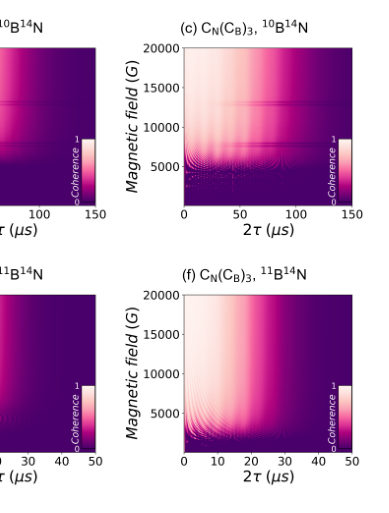
<figcaption class="paper-figure-caption"><b>Fig 4.</b> Figure 4. Hahn-echo coherence maps of the three B-site defects in ¹⁴N-containing baths. (a–c) CB, C2CB,</figcaption>
</figure>
<figure class="paper-figure-card">
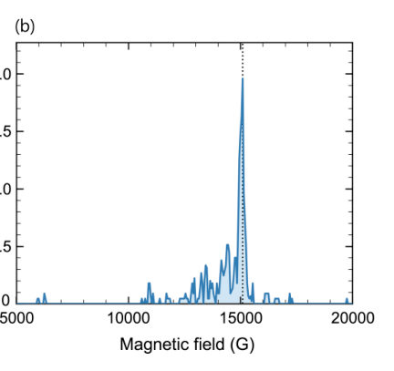
<figcaption class="paper-figure-caption"><b>Fig 5.</b> Figure 5. (a) Schematic energy levels (not to scale) of the two product states of a 10B (I = 3) – 15N (I =</figcaption>
</figure>
</div>

<p><strong>Summary.</strong> This theoretical study develops a method to structurally identify carbon-based spin qubits in h-BN by analyzing their electron-spin decoherence. By mapping out characteristic spectral modulations (fingerprints) in the coherence time as a function of magnetic field and isotope composition, the authors establish a powerful diagnostic tool complementary to optical methods. This advances the feasibility of using these materials for quantum information processing.</p>
<p><strong>Why it may be interesting.</strong> This work provides a concrete, measurable spectroscopic signature (decoherence fingerprint) derived from fundamental quantum interactions (hyperfine/quadrupole coupling) that can be used to characterize solid-state qubits, which is highly relevant to quantum computing hardware development.</p>
<details>
<summary>Detailed structure</summary>
<p><strong>Main problem.</strong> The primary challenge is identifying the unknown atomic structures of carbon-based single-spin qubits embedded within hexagonal boron nitride (h-BN).</p>
<p><strong>Main result.</strong> The atomic structure of each defect is uniquely imprinted on its electron-spin decoherence fingerprint, providing a structural identification route complementary to optical spectroscopy.</p>
<p><strong>Method.</strong> The study uses first-principles calculations to map the Hahn-echo and CPMG coherence dynamics of the spin qubits.</p>
<p><strong>Model / system.</strong> The system involves electron spins coupled to a surrounding nuclear spin bath (boron and nitrogen isotopes) within the h-BN lattice. The dynamics are modeled using electron-spin decoherence calculations incorporating hyperfine and quadrupole couplings.</p>
<p><strong>Key observables.</strong> Electron-spin-echo envelope modulation (ESEEM) patterns, the magnetic-field dependence of the coherence time ($T_2$), and the specific magnetic fields where modulation occurs.</p>
<p><strong>Important parameters / regimes.</strong> External magnetic fields (e.g., 500 G, 20000 G), isotopic compositions ($   ext{}^{10}  ext{B},     ext{}^{11}  ext{B},     ext{}^{14}  ext{N},     ext{}^{15}  ext{N}$), and the Transition Boundary (TB) fields.</p>
<p><strong>Assumptions / limitations.</strong> The spin density is assumed to be predominantly localized on carbon atoms, leading to coupling mainly via the Fermi contact interaction to nearest-neighbor nuclear spins.</p>
<p><strong>Figures summary.</strong> Figures illustrate crystal structures of candidate defects, coherence colormaps showing ESEEM patterns across different isotopes and magnetic fields, and spectra used to pinpoint structural fingerprints.</p>
<p><strong>Paper structure.</strong> The paper systematically analyzes the spin dynamics by calculating coherence functions for various defects, identifying distinct regimes (low-field vs. high-field) separated by a Transition Boundary, and correlating observed spectral modulations with specific atomic arrangements.</p>
</details>
<details>
<summary>Abstract</summary>
<p>Carbon-related defects in hexagonal boron nitride are promising room-temperature single-spin qubits and quantum sensors, but their atomic structures remain largely unidentified. Here we show, using first-principles calculations of electron-spin decoherence, that the atomic structure of each defect is imprinted in its spin coherence. Mapping the Hahn-echo dynamics of seven candidate carbon defects across magnetic field and four isotope-engineered nuclear-spin baths, we find that electron-spin-echo envelope modulation emerges at defect-specific magnetic fields, at which the nearest-neighbor nuclear spins satisfy a cancellation condition set by their hyperfine and quadrupole couplings. Both the fields and the modulation frequencies follow from an analytical model using computed hyperfine and quadrupole tensors alone, and they shift or vanish upon isotope substitution. At low fields, the field dependence of the coherence time separates the defects into two classes according to the sublattice occupied by carbon. These decoherence fingerprints, directly testable in isotope-engineered samples, establish a structural identification route complementary to optical spectroscopy.</p>
</details>
<p><sub><a href="#top">↑ back to top</a></sub></p>

<p><a id="paper-2608.21164"></a></p>
<h3 id="quantum-fisher-information-in-a-quenched-math220math-superfluid"><a href="http://arxiv.org/abs/2608.21164v1">Quantum Fisher information in a quenched $p + ip$ superfluid</a></h3>
<p><strong>Authors:</strong> Stelio Varrone, Yunxiang Liao<br>
<strong>Type:</strong> theory · <strong>Category:</strong> quantum gases · <strong>PDF:</strong> <a href="https://arxiv.org/pdf/2608.21164v1">https://arxiv.org/pdf/2608.21164v1</a><br>
<strong>Analysis basis:</strong> full PDF text, analyzed in chunks
<strong>Topic relevance:</strong> <code>non-equilibrium universality</code> <strong>3/5</strong> · <code>Keldysh / 2PI / non-Gaussian methods</code> <strong>1/5</strong> · <code>analog quantum simulation</code> <strong>1/5</strong> · <code>driven-dissipative phase transition</code> <strong>1/5</strong> · <code>methods for driven-dissipative</code> <strong>1/5</strong> · <code>quantum measurements</code> <strong>1/5</strong> · <code>scars &amp; prethermalization</code> <strong>1/5</strong></p>
<div class="figure-strip-hint">↔ Scroll figures horizontally</div>
<div class="paper-figures-scroll">
<figure class="paper-figure-card">
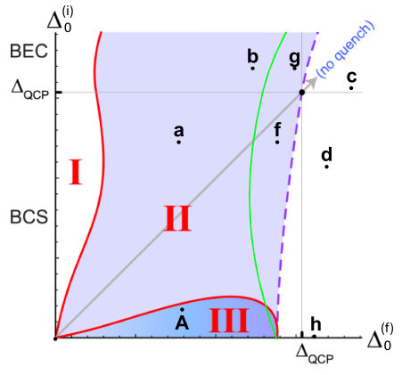
<figcaption class="paper-figure-caption"><b>Fig 1.</b> FIG. 1. The quenched p + ip superfluid phase diagram, from Ref. [31], showing all the quenches considered in this paper. The horizontal and vertical axes show the order parameters ∆(f) 0 and ∆(i) 0 of the ground states of the post-quench and pre-quench Hamiltonians, respectively. The red lines sepa- rate three dynamical phases I, II and III, where the long- time asymptotic order parameter ∆∞(t) respectively decays to zero, approaches a nonzero constant, and oscillates peri- odically. The dashed purple line, where µ∞= 0, extends the equilibrium topological quantum critical point ∆QCP into the nonequilibrium regime. It separates the topological region with Green’s function winding number W =...</figcaption>
</figure>
<figure class="paper-figure-card">
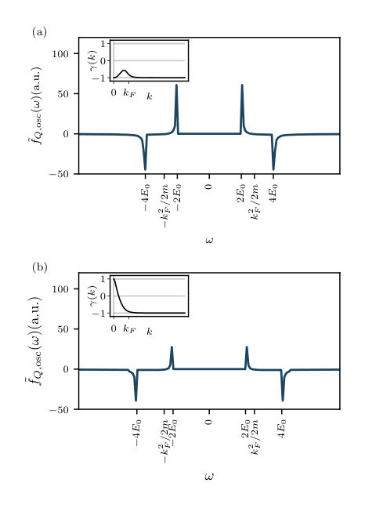
<figcaption class="paper-figure-caption"><b>Fig 2.</b> FIG. 2. Fourier transform of the QFI density with the zero frequency spike omitted, i.e. the Fourier transform of the oscillating part of the QFI density ˜fQ,osc(ω), for (a) the BCS-to-BCS quench “a”, with coordinate (∆(i) 0 , ∆(f) 0 ) = (0.8, 0.5)∆QCP, and (b) the BEC-to-BCS quench “b”, with (∆(i) 0 , ∆(f) 0 ) = (1.1, 0.8)∆QCP. Both quenches lie to the left of the µ∞= m∆2 ∞line in the phase diagram (i.e., satisfy µ∞&gt; m∆2 ∞), and their QFI spectra exhibit van Hove singu- larities at ω = ±2E0, ±4E0, with E0 denoting the minimum quasiparticle energy (Eq. 46). Insets show the corresponding Cooper-pair distribution function γ(k). For quench “a” with Q = W = 1, γ(k) →−1 at both k = 0 and k →∞,...</figcaption>
</figure>
<figure class="paper-figure-card">
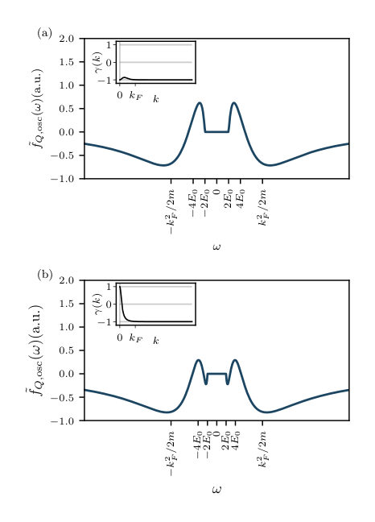
<figcaption class="paper-figure-caption"><b>Fig 3.</b> FIG. 3. Same as Fig. 2, but for (a) the BCS-to-BCS quench “f” with coordinates (∆(i) 0 , ∆(f) 0 ) = (0.8, 0.9)∆QCP and (b) the BEC-to-BCS quench “g” with (∆(i) 0 , ∆(f) 0 ) = (1.1, 0.97)∆QCP. Both quenches satisfy µ∞&lt; m∆2 ∞, and their QFI spectra as predicted vanishes exactly at the con- tinuum edges ω = ±2E0. As ω approaches ±(2E0 + 0+), the sign of ˜fQ,osc(ω) is positive (negative) for quench “f” (“g”), revealing the winding number Q = 1 (Q = 0) that character- izes the topology of pre-quench state. Insets show the corre- sponding Cooper-pair distribution function γk, which satisfies γk = −1 (γk = +1) at k = 0 for quench “f” (“g”) with W = Q (W ̸= Q).</figcaption>
</figure>
<figure class="paper-figure-card">
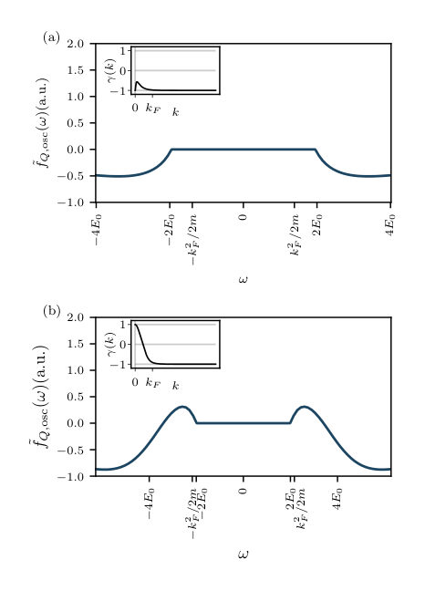
<figcaption class="paper-figure-caption"><b>Fig 4.</b> FIG. 4. Same as Fig. 2, but for (a) the BEC-to-BEC quench “c” with coordinates (∆(i) 0 , ∆(f) 0 ) = (1.02, 1.2)∆QCP and (b) the BCS-to-BEC quench “d” with (∆(i) 0 , ∆(f) 0 ) = (0.7, 1.1)∆QCP. Both quenches satisfy the condition µ∞&lt; m∆2 ∞, and as a result the QFI spectrum vanishes at the con- tinuum edges. Just inside the continua near the edge, the sign of ˜fQ,osc(ω) is negative (positive) for quench “c” (“d”), corresponding to a trivial (nontrivial) initial state with Q = 0 (Q = 1). Both quenches share the same W = 0, and since W = Q (W ̸= Q) for quench “c” (“d”), the distribution func- tion γ shown in the inset exhibits an even (odd) number of zeros.</figcaption>
</figure>
<figure class="paper-figure-card">
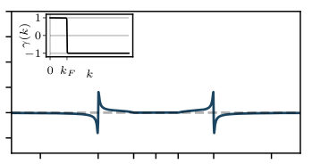
<figcaption class="paper-figure-caption"><b>Fig 5.</b> FIG. 5. Same as Fig. 2, but for the BCS-to-BEC quench “h” with (∆(i) 0 , ∆(f) 0 ) = (0.01, 1.05)∆QCP. The Cooper-pair dis- tribution function shown in the inset becomes approximately a step function with the step located at the Fermi momentum kF . As a result, the QFI spectrum exhibits pronounced peaks near ω = ±2E∞(kF ).</figcaption>
</figure>
</div>

<p><strong>Summary.</strong> This paper investigates the diagnostic capability of the Quantum Fisher Information (QFI) in a quenched p+ip superfluid. By analyzing the QFI spectrum after the quench, the authors show that the QFI can uniquely distinguish three distinct dynamical phases. This work highlights that non-equilibrium dynamics can reveal rich physical information inaccessible through equilibrium measurements.</p>
<p><strong>Why it may be interesting.</strong> It demonstrates that non-equilibrium dynamics can enhance the diagnostic power of quantum information measures like QFI, providing new tools to probe quantum phases beyond equilibrium thermodynamics.</p>
<details>
<summary>Detailed structure</summary>
<p><strong>Main problem.</strong> To determine if the Quantum Fisher Information (QFI) retains its diagnostic power in non-equilibrium systems when using a simple, generic observable like particle number as the generator.</p>
<p><strong>Main result.</strong> The QFI associated with the particle number distinguishes three distinct dynamical phases (I, II, and III) after a quench, revealing topological information inaccessible when the system is in equilibrium.</p>
<p><strong>Method.</strong> The QFI is calculated for the long-time asymptotic state following an instantaneous quench in a 2D p+ip superfluid, analyzing the resulting Fourier spectrum.</p>
<p><strong>Model / system.</strong> The system is a two-dimensional p+ip superfluid, modeled using a BCS Hamiltonian framework, whose dynamics are studied after a quench of the coupling strength.</p>
<p><strong>Key observables.</strong> Quantum Fisher Information (QFI) spectrum $    ilde{F}_Q(\omega)$, the order parameter $\Delta(t)$, and the pseudospin expectation values $\langle s_k 
angle$.</p>
<p><strong>Important parameters / regimes.</strong> The quench process, the asymptotic quasiparticle energy gap, and the subsystem size $L_A$.</p>
<p><strong>Assumptions / limitations.</strong> The analysis relies on the large subsystem approximation ($L_A$) for initial spectral analysis, though results persist beyond this limit.</p>
<p><strong>Figures summary.</strong> The notes reference Figure 1, which illustrates the three distinct dynamical phases (I, II, and III) characterized by the evolution of the order parameter.</p>
<p><strong>Paper structure.</strong> The paper reviews QFI theory, presents results for the equilibrium state (showing no transition signature), and then details the distinct spectral signatures found in the three non-equilibrium dynamical phases (I, II, and III).</p>
</details>
<details>
<summary>Abstract</summary>
<p>The quantum Fisher information (QFI) is widely used to characterize quantum phases and transitions, but its diagnostic power sometimes relies on selecting special generators based on prior knowledge of the underlying physics. We ask whether this requirement can be relaxed in nonequilibrium systems by studying the QFI of the long-time asymptotic state of a two-dimensional p+ip superfluid following an instantaneous quench of the coupling strength, using the particle number within a large subextensive subsystem as the generator. In equilibrium, the ground-state QFI is continuous across the topological transition between the weak-pairing BCS and the strong-pairing BEC phases, showing no direct signature of the transition. After the quench, however, the QFI associated with the same generator distinguishes the three dynamical phases and can encode the topology of the pre-quench state. In phase I, with a vanishing order parameter, the QFI Fourier spectrum consists of a single zero-frequency spike determined by the nonequilibrium distribution function. In phase II, with a constant nonzero order parameter, the QFI spectrum contains a zero-frequency spike and two continua separated by a gap set by the minimum asymptotic quasiparticle energy. The continuum edge behavior reveals whether this minimum occurs at zero or finite momentum. In the former case, the spectral weight vanishes at the edge, with the sign just inside the continuum encoding the pre-quench topology for large subsystem. In phase III, with a time-periodic order parameter, the QFI spectrum exhibits discrete peaks at integer multiples of the oscillation frequency, together with continua associated with the Floquet quasienergy spectrum. Our results show that driving the system out of equilibrium can enhance the diagnostic power of the QFI for a standard physical observable, revealing information inaccessible in equilibrium.</p>
</details>
<p><sub><a href="#top">↑ back to top</a></sub></p>

<p><a id="paper-2608.21011"></a></p>
<h3 id="minimization-of-micromotion-for-nanoparticles-in-a-paul-trap"><a href="http://arxiv.org/abs/2608.21011v1">Minimization of micromotion for nanoparticles in a Paul trap</a></h3>
<p><strong>Authors:</strong> Jamie Morley, Jean Paul Louys Sansó, Dmitry Bykov, Simon Baier, Tracy Northup<br>
<strong>Type:</strong> experiment · <strong>Category:</strong> other · <strong>PDF:</strong> <a href="https://arxiv.org/pdf/2608.21011v1">https://arxiv.org/pdf/2608.21011v1</a><br>
<strong>Analysis basis:</strong> full PDF text, analyzed in chunks
<strong>Topic relevance:</strong> <code>QC/QI experiment</code> <strong>3/5</strong> · <code>quantum measurements</code> <strong>3/5</strong> · <code>analog quantum simulation</code> <strong>1/5</strong></p>
<div class="figure-strip-hint">↔ Scroll figures horizontally</div>
<div class="paper-figures-scroll">
<figure class="paper-figure-card">
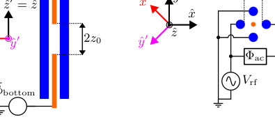
<figcaption class="paper-figure-caption"><b>Fig 1.</b> FIG. 1. Schematic of a linear Paul trap. One grounded elec- trode pair and one AC-driven electrode pair constitute the ra- dial trapping electrodes. These electrodes are shown in blue, endcaps in orange, and compensation electrodes in pink and red. We displace a particle in three dimensions by varying the DC potentials ˜ϕtop, ˜ϕbottom, ˜ϕx′, ˜ϕy′. Left: Side projec- tion of the trap onto the z-x′ plane. The distance between the surfaces of the top and bottom endcaps is 2z0. Right: Top projection of the trap onto the x-y plane, including com- pensation electrodes. The distance between the surfaces of opposing radial trapping electrodes is 2r0. The amplitude of the applied AC potential...</figcaption>
</figure>
<figure class="paper-figure-card">
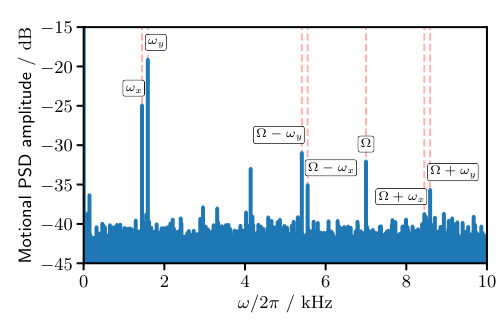
<figcaption class="paper-figure-caption"><b>Fig 2.</b> FIG. 2. A typical PSD before micromotion compensation, obtained from the detection system most sensitive to the x′</figcaption>
</figure>
<figure class="paper-figure-card">
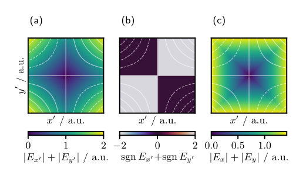
<figcaption class="paper-figure-caption"><b>Fig 3.</b> FIG. 3. Simulations of an ideal quadrupole field ⃗E generated by the radial trapping electrodes in Fig. 1. The simulations are centered at the node for a given time; displacement of a trapped particle from the node causes excess micromotion. Equipotential lines are shown in white. (a) Sum of the abso- lute values of the projections Ex′ ≡⃗E · ˆx′ and Ey′ ≡⃗E · ˆy′. (b) Sum of the signs of the projections Ex′ and Ey′. (c) Sum of the absolute values of the projections Ex ≡⃗E · ˆx and Ey ≡⃗E · ˆy.</figcaption>
</figure>
<figure class="paper-figure-card">
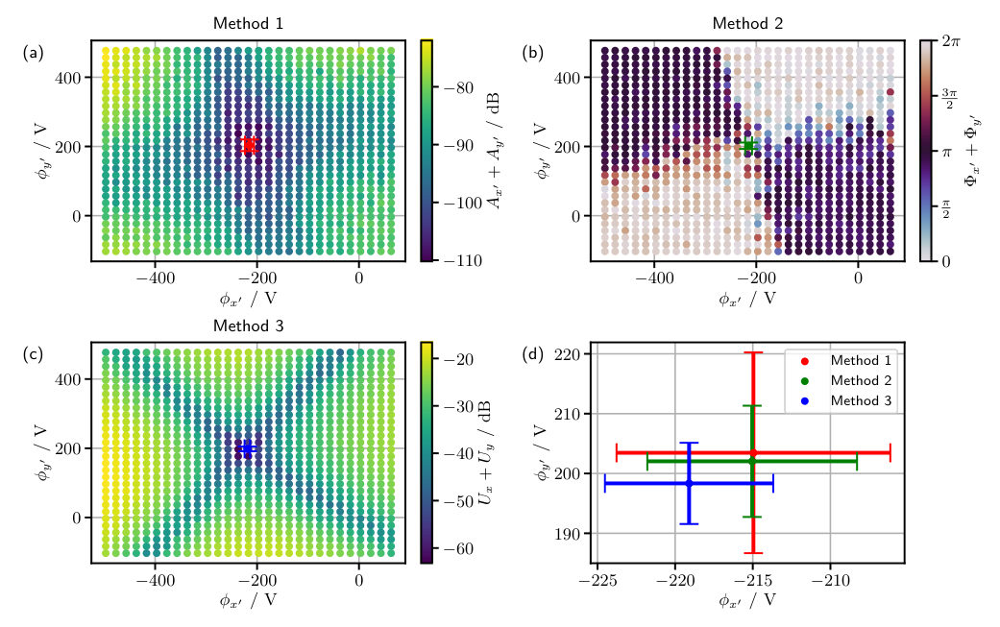
<figcaption class="paper-figure-caption"><b>Fig 4.</b> FIG. 4. Data from applying Methods 1–3 to find the micromotion minimum in the radial plane. The setpoints ϕx′ and ϕy′ are shown on the horizontal and vertical axes, and their ranges in (a–c) correspond to scanning an area of approximately (0.014r0)2. (a) Method 1: sum of the excess micromotion amplitudes Ax′ and Ay′. The extracted micromotion minimum is shown in red. (b) Method 2: sum of the excess micromotion phases Φx′ and Φy′. The extracted micromotion minimum is shown in green. (c) Method 3: sum of the secular-motion amplitudes Ux and Uy during simultaneous tickling of the x and y modes. The extracted micromotion minimum is shown in blue. (d) Radial excess micromotion minima found via...</figcaption>
</figure>
<figure class="paper-figure-card">
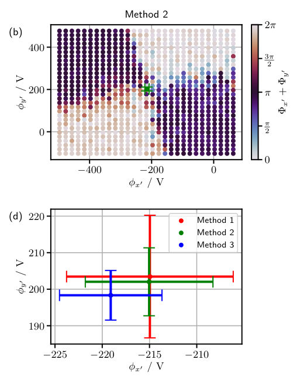
<figcaption class="paper-figure-caption"><b>Fig 5.</b> Figure 4 is the main result of this work. It shows data from applying Methods 1–3 to find the micromotion min- imum in the radial plane. Figure 4(a) shows the sum Ax′ + Ay′ as a function of ϕx′ and ϕy′. The profile we obtained is consistent with that of Fig. 3(a). In the dark region, the measured mi- cromotion amplitudes are at the detection noise floor. However, sub-noise precision in the micromotion mini- mum can be obtained. Here, we extracted the minimum (ϕx′, ϕy′) = (−215±9, 203±20) V. Appendix D provides more information on sub-noise precision and describes how the minima were obtained for this plot and others.</figcaption>
</figure>
</div>

<p><strong>Summary.</strong> This paper experimentally investigates methods to minimize excess micromotion in nanoparticles trapped within a Paul trap. The authors compare three distinct compensation techniques—amplitude, phase, and resonant tickling—to characterize the stray electric fields. They demonstrate that the resonant tickling method is superior, achieving stray field nullification precision comparable to established trapped-ion standards.</p>
<p><strong>Why it may be interesting.</strong> This work directly addresses noise and decoherence sources in trapped particle quantum experiments, providing crucial experimental benchmarks for achieving high-precision quantum measurements using mesoscopic objects.</p>
<details>
<summary>Detailed structure</summary>
<p><strong>Main problem.</strong> The primary goal is to minimize 'excess micromotion' experienced by charged nanoparticles trapped in a Paul trap.</p>
<p><strong>Main result.</strong> The resonant 'tickling' method proved to be the most precise technique, allowing the stray field to be nullified to within $2.9 	ext{ V/m}$, comparable to trapped-ion experiments.</p>
<p><strong>Method.</strong> The authors experimentally compare three methods—direct amplitude detection, direct phase detection, and resonant tickling—to characterize and compensate for excess micromotion.</p>
<p><strong>Model / system.</strong> The system involves trapping charged nanoparticles (e.g., silica spheres) in a linear Paul trap. The particle motion is governed by the Mathieu equation, and excess micromotion arises from stray DC fields.</p>
<p><strong>Key observables.</strong> Excess micromotion amplitudes ($A_{i'}$), micromotion phases ($\Phi_{i'}$), and the residual stray electric field components ($\eta_{x'}, \eta_{y'}, \eta_{z'}$).</p>
<p><strong>Important parameters / regimes.</strong> Trap parameters include $2r_0 = 1.8 	ext{ mm}$ and $2z_0 = 3.2 	ext{ mm}$. The residual stray field precision reached $2.9 	ext{ V m}^{-1}$.</p>
<p><strong>Assumptions / limitations.</strong> The analysis assumes that the particle's position is linearly related to the applied voltages, and that the tickling method's precision is limited by thermal noise.</p>
<p><strong>Figures summary.</strong> Figures illustrate the trap setup, the Power Spectral Density (PSD) showing motion peaks, and comparative data (Figs. 4, 5, 6) demonstrating that the resonant tickling method yields the best results for minimizing micromotion in both radial and axial planes.</p>
<p><strong>Paper structure.</strong> The paper introduces the problem of excess micromotion, details the theoretical background using the Mathieu equation, compares three experimental compensation methods (amplitude, phase, tickling), presents quantitative results showing the superiority of the tickling method, and concludes with characterization of the residual stray field.</p>
</details>
<details>
<summary>Abstract</summary>
<p>When a charged particle in a Paul trap is displaced from the node of the AC trapping field, excess micromotion arises as an undesired effect. Excess micromotion heats the particle, limits the precision with which the particle can be localised, and acts as a decoherence channel in quantum mechanical experiments. However, thus far there is no standard procedure for micromotion compensation with mesoscopic particles. Here, we experimentally demonstrate three different methods for minimizing the micromotion of a nanoparticle in a linear Paul trap along three axes. The most precise method allows us to nullify the stray field to within 2.9 V/m, which is comparable to reported values in trapped-ion experiments.</p>
</details>
<p><sub><a href="#top">↑ back to top</a></sub></p>

<p><a id="paper-2608.21291"></a></p>
<h3 id="neural-quantum-states-in-condensed-matter-advances-best-practices-and-prospects"><a href="http://arxiv.org/abs/2608.21291v1">Neural quantum states in condensed matter: advances, best practices, and prospects</a></h3>
<p><strong>Authors:</strong> Jonas B. Rigo, Björn J. Wurst, Rajah Nutakki, Markus Schmitt, Dante Kennes<br>
<strong>Type:</strong> theory · <strong>Category:</strong> numerical methods · <strong>PDF:</strong> <a href="https://arxiv.org/pdf/2608.21291v1">https://arxiv.org/pdf/2608.21291v1</a><br>
<strong>Analysis basis:</strong> full PDF text, analyzed in chunks
<strong>Topic relevance:</strong> <code>analog quantum simulation</code> <strong>3/5</strong> · <code>methods for driven-dissipative</code> <strong>3/5</strong></p>
<div class="figure-strip-hint">↔ Scroll figures horizontally</div>
<div class="paper-figures-scroll">
<figure class="paper-figure-card">
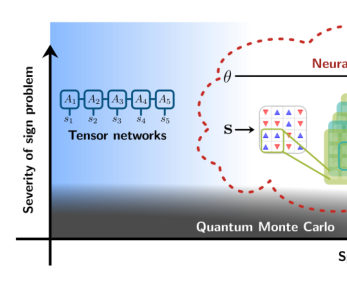
<figcaption class="paper-figure-caption"><b>Fig 1.</b> Figure 1. The figure portrays the schematic landscape of the main computational approaches to strongly correlated quantum many-body systems. The vertical axis indicates the severity of the sign problem, while the horizontal axis shows spatial dimension, used here as a practical proxy for the growing entanglement complex- ity that limits wave-function-based methods. Tensor-network methods are most effective in low dimensions, quantum Monte Carlo performs best when the sign problem is weak or absent, and DMFT is accurate in the high-dimensional limit. Neural quantum states (NQS) are shown as targeting the broad intermediate regime between these established approaches. The illustrated NQS is a...</figcaption>
</figure>
<figure class="paper-figure-card">
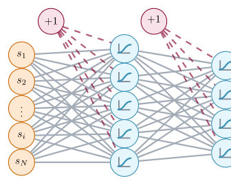
<figcaption class="paper-figure-caption"><b>Fig 2.</b> Figure 2. Schematic illustration of a feed-forward neural network, the prototypical artificial neural-network architecture used in NQS. The network maps an input configuration through a sequence of hidden layers to an output wave-function amplitude. Each layer consists of an affine linear transformation followed by an activation function f, which is nonlinear and typically strictly monotonic.</figcaption>
</figure>
<figure class="paper-figure-card">
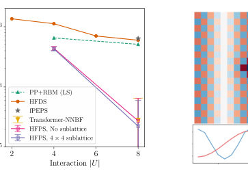
<figcaption class="paper-figure-caption"><b>Fig 3.</b> Figure 4. a) Energies reached on 8 × 8 for various architectures at half filling. b-c) Stripe pattern at 1 8 hole doping for only nearest neighbor hopping (b) and including next to nearest neighbor hopping. The top panel shows the spin correlation function, while the bottom panel shows cuts of the staggered spin correlation function (red) and density (blue). All panels are adapted from Ref. [68] and published under CC BY 4.0.</figcaption>
</figure>
<figure class="paper-figure-card">
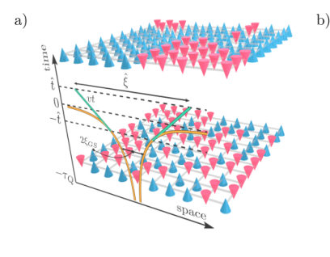
<figcaption class="paper-figure-caption"><b>Fig 4.</b> Figure 5. The schematic a) shows a space-time picture of a quench across a critical point at t = 0. During a ramp parameterized by the dimensionless distance to the critical Hamiltonian parameter ε(t) = t/τQ, critical slowing down prevents the correlation length from following the equilibrium divergence of the correlation length, so ξ saturates at a finite freeze-out scale ˆξ. A freeze-out length scale together with the freeze-out time ˆt form a sonic horizon, so that the system breaks symmetry in quasi-independent domains of size ˆξ, producing defects and thus excitations. Figure b) summarizes the results of the finite size examination of the quantum Kibble-Zurek mechanism in Ref. [83]. It...</figcaption>
</figure>
<figure class="paper-figure-card">
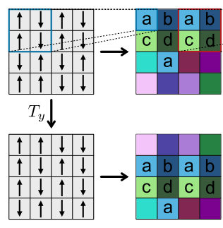
<figcaption class="paper-figure-caption"><b>Fig 5.</b> Figure 6. A local, translationally-equivariant architecture. Since the output of each layer depends on local information, locally identical environments are mapped to the same features (labelled cells). Since each layer is translationally-equivariant, translating the output is equivalent to translating the input (compare top and bottom rows). Therefore the wave function can be projected to a desired translational irreducible representation in a single evaluation by appropriate choice of output function.</figcaption>
</figure>
</div>

<p><strong>Summary.</strong> This review surveys the use of Neural Quantum States (NQS) to represent and simulate quantum many-body wave functions. It details how NQS combines the flexibility of neural networks with Monte Carlo sampling to tackle strongly correlated systems. The work highlights NQS's potential to bridge gaps between existing computational methods, particularly in complex magnetic and fermionic models.</p>
<p><strong>Why it may be interesting.</strong> NQS provides a powerful, machine-learning-driven alternative to traditional numerical techniques for simulating complex quantum dynamics and ground states in condensed matter systems.</p>
<details>
<summary>Detailed structure</summary>
<p><strong>Main problem.</strong> The core challenge is accurately describing the collective consequences of microscopic laws governing strongly correlated quantum many-body systems, which is computationally intractable.</p>
<p><strong>Main result.</strong> Neural Quantum States (NQS) offer a flexible, parameter-efficient variational representation for quantum wave functions, successfully tackling regimes where established methods like QMC or Tensor Networks struggle.</p>
<p><strong>Method.</strong> The method involves parameterizing the quantum state $|\psi_	heta
angle$ using an Artificial Neural Network (ANN) ansatz and estimating expectation values via Monte Carlo sampling, minimizing the variational energy $E(	heta)$.</p>
<p><strong>Model / system.</strong> The approach is applied to various lattice Hamiltonians, including the $J_1-J_2$ model for frustrated magnets and the Hubbard model for interacting fermions.</p>
<p><strong>Key observables.</strong> Variational energy $E(	heta)$, ground-state energy ($E_0$), spin correlation functions, and the residual in the time-dependent Schrödinger equation (TDSE).</p>
<p><strong>Important parameters / regimes.</strong> The method is most valuable in the 'intermediate regime' where established methods fail, and it must contend with challenges like learning non-trivial sign/phase structures.</p>
<p><strong>Assumptions / limitations.</strong> The primary assumption is that the quantum state can be accurately represented by an ANN ansatz, and the calculation relies on the variational principle or TDSE residual minimization.</p>
<p><strong>Figures summary.</strong> Figure 1 schematically compares computational approaches based on the sign problem severity vs. spatial dimension. Figure 2 illustrates the feed-forward neural network structure used in NQS.</p>
<p><strong>Paper structure.</strong> The paper reviews advances by first outlining the general landscape of quantum simulation methods (QMC, TN, etc.), then detailing the NQS mechanics (ansatz, optimization), applying it to specific physical systems (magnets, fermions), and finally summarizing remaining challenges and future directions.</p>
</details>
<details>
<summary>Abstract</summary>
<p>Neural quantum states provide flexible variational representations of quantum many-body wave functions by combining neural-network parametrizations with Monte Carlo sampling. In this perspective, we review recent advances in their application to condensed-matter systems, focusing on frustrated quantum magnets, interacting lattice fermions, and non-equilibrium dynamics. We discuss the architectures, symmetry constraints, optimization methods, and sampling strategies underlying state-of-the-art calculations, and summarize practical guidelines for reliable simulations. We also examine the principal remaining challenges, including learning non-trivial sign and phase structures, controlling variational bias, enforcing physical symmetries, scaling optimization to large networks, and achieving stable real-time evolution. Finally, we outline promising directions in which neural quantum states may extend the reach of classical simulations of strongly correlated quantum matter.</p>
</details>
<p><sub><a href="#top">↑ back to top</a></sub></p>

<p><a id="paper-2608.21261"></a></p>
<h3 id="meandering-stripes-in-the-frustrated-math237math-math238math-ising-model-on-the-honeycomb-lattice"><a href="http://arxiv.org/abs/2608.21261v1">Meandering stripes in the frustrated $J_1$-$J_2$ Ising model on the honeycomb lattice</a></h3>
<p><strong>Authors:</strong> Denis Gessert, Martin Weigel, Wolfhard Janke<br>
<strong>Type:</strong> theory · <strong>Category:</strong> statistical mechanics · <strong>PDF:</strong> <a href="https://arxiv.org/pdf/2608.21261v1">https://arxiv.org/pdf/2608.21261v1</a><br>
<strong>Analysis basis:</strong> full PDF text, analyzed in chunks
<strong>Topic relevance:</strong> <code>analog quantum simulation</code> <strong>3/5</strong> · <code>Frenkel-Kontorova</code> <strong>1/5</strong> · <code>methods for driven-dissipative</code> <strong>1/5</strong></p>
<div class="figure-strip-hint">↔ Scroll figures horizontally</div>
<div class="paper-figures-scroll">
<figure class="paper-figure-card">
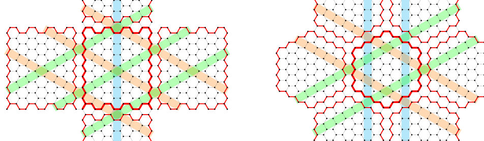
<figcaption class="paper-figure-caption"><b>Fig 1.</b> FIG. 1. Honeycomb lattice with (a) rectangular and (b) hexagonal periodic boundary conditions. Black circles represent spin sites, and dashed lines correspond to nearest-neighbor interactions. Solid red lines show the system’s boundaries. For both (a) and (b), L = 8. When one of the three lattice axes is pinned, a wrapping line of pairs of spins in the direction of that axis can be flipped without changing the energy. The cyan, green, and orange regions show a single exemplary line for the axes 1, 2, and 3, respectively.</figcaption>
</figure>
<figure class="paper-figure-card">

<figcaption class="paper-figure-caption"><b>Fig 2.</b> FIG. 2. Exemplary wrapping lines of pairs of spins that can be flipped without changing the energy when the respective axis is pinned. Panels (a), (b) and (c) correspond to the axes 1, 2 and 3, respectively. The top row shows possible starting configurations, the middle row indicates moves to generate different ground states, and the bottom row shows random ground states generated in this fashion.</figcaption>
</figure>
<figure class="paper-figure-card">

<figcaption class="paper-figure-caption"><b>Fig 3.</b> FIG. 3. Exemplary snapshots of likely ground states for L = 24 systems using rectangular FBC and for J2 = −0.45 (left), −1/2 (middle), and −0.55 (right). The configurations were taken from the replicas with the lowest observed energy at the final inverse temperature β = 5. Σ1 and Σ2 refer to the NN and NNN energy contributions in Eq. (1), respectively. Note that these states are not ground states of the periodic system.</figcaption>
</figure>
<figure class="paper-figure-card">

<figcaption class="paper-figure-caption"><b>Fig 4.</b> FIG. 4. Exemplary representations of (a) dislocations and (b,c) disclinations that can occur. In each panel the black solid circle highlights the central part of the defect.</figcaption>
</figure>
<figure class="paper-figure-card">

<figcaption class="paper-figure-caption"><b>Fig 5.</b> FIG. 5. Illustration of how the nematic order parameter of Eq. (6) is defined.</figcaption>
</figure>
</div>

<p><strong>Summary.</strong> This paper analyzes the frustrated J1-J2 Ising model on the honeycomb lattice under strong antiferromagnetic coupling. The research reveals the formation of meandering stripe-like partially disordered ground states in this regime. By using advanced simulation techniques and order parameters, the authors probe the complex nature of the phase transition, finding that the system's behavior is extremely sensitive to boundary conditions and sample geometry.</p>
<p><strong>Why it may be interesting.</strong> The investigation into geometric frustration and the nature of phase transitions (like BKT) in a lattice model is fundamental to understanding critical phenomena in condensed matter physics, which has parallels in quantum many-body systems.</p>
<details>
<summary>Detailed structure</summary>
<p><strong>Main problem.</strong> The study investigates the low-temperature phase and ground state degeneracy of the frustrated J1-J2 Ising model on the honeycomb lattice, particularly in the regime of strong antiferromagnetic next-nearest-neighbor interactions.</p>
<p><strong>Main result.</strong> The system exhibits partially disordered ground states characterized by meandering stripes, and the nature of the low-temperature transition remains ambiguous, suggesting either a crossover or a continuous transition like the BKT type.</p>
<p><strong>Method.</strong> The authors employed Monte Carlo simulations, finite-size scaling analysis, and the introduction of a complex-valued nematic order parameter to analyze the system's behavior.</p>
<p><strong>Model / system.</strong> The model is the J1-J2 Ising Hamiltonian on the honeycomb lattice, with couplings fixed at ferromagnetic nearest-neighbor J1=1 and strong antiferromagnetic next-nearest-neighbor J2 &lt;= -1/4.</p>
<p><strong>Key observables.</strong> Complex-valued nematic order parameter, specific heat ($C_V$), ground-state entropy per site ($S(T=0)/N$), and the Binder parameter ($U_4$).</p>
<p><strong>Important parameters / regimes.</strong> The critical parameter regime is $J_2 \le -1/4$, and the analysis is highly sensitive to the boundary conditions (Periodic vs. Free) and the sample aspect ratio.</p>
<p><strong>Assumptions / limitations.</strong> The analysis notes that previous specific heat peaks observed might only appear under periodic boundary conditions and that the ground state structure depends critically on the boundary conditions.</p>
<p><strong>Figures summary.</strong> Figures compare simulation data for the J1-J2 model at various J2 values, showing specific heat behavior under PBC vs. FBC, and illustrate exemplary wrapping lines of spin pairs for ground state analysis.</p>
<p><strong>Paper structure.</strong> The paper systematically analyzes the ground state energy and entropy for different J2 regimes, introduces the nematic order parameter to characterize the stripe phase, and concludes with detailed finite-size scaling analyses comparing PBC and FBC results.</p>
</details>
<details>
<summary>Abstract</summary>
<p>We study the frustrated $J_1$-$J_2$ Ising model on the honeycomb lattice with ferromagnetic nearest-neighbor couplings fixed at $J_1=1$ and strong antiferromagnetic next-nearest-neighbor interactions, i.e., $J_2 \leq -1/4$. Little is known for this range of $J_2$, whereas for less negative values of $J_2$ the system orders ferromagnetically at low temperatures and appears to remain in the Ising universality class. In previous work it was shown that the model has a largely degenerate ground state, and it was conjectured that there is some kind of phase transition. We introduce a complex-valued nematic order parameter, which can differentiate between the high-temperature paramagnetic phase and the observed partially-disordered stripe phase at lower temperatures. Configurations in this phase consist of stripes of spins parallel with respect to one lattice direction, which collectively meander along the remaining two, producing partially disordered ground states. The sharp peaks in the specific heat observed in earlier work only appear when using periodic boundary conditions and are absent for free boundaries. Additionally, we reveal a striking dependence of the behavior on the aspect ratio of the considered samples. Ultimately, even a careful finite-size scaling analysis for $J_2 = -0.5$ and $J_2 = -1$ is unable to clearly discern between a crossover without any singularities and some form of continuous transition, including the possibility of an infinite-order transition of the Berezinskii-Kosterlitz-Thouless (BKT) type. For $J_2=-1/4$ we find that the system remains disordered at all temperatures and that it exhibits a finite ground-state entropy per site, for which our simulations provide the accurate asymptotic estimate $S(T=0)/N = 0.230\,960\,93(14)$ in the thermodynamic limit $N\rightarrow\infty$.</p>
</details>
<p><sub><a href="#top">↑ back to top</a></sub></p>

<p><a id="paper-2608.21110"></a></p>
<h3 id="pair-size-versus-coherence-length-and-quantum-geometry-in-the-spin-orbit-coupled-bcs-bec-crossover"><a href="http://arxiv.org/abs/2608.21110v1">Pair size versus coherence length and quantum geometry in the spin-orbit coupled BCS-BEC crossover</a></h3>
<p><strong>Authors:</strong> R. N. Kalkan, M. Iskin<br>
<strong>Type:</strong> theory · <strong>Category:</strong> quantum gases · <strong>PDF:</strong> <a href="https://arxiv.org/pdf/2608.21110v1">https://arxiv.org/pdf/2608.21110v1</a><br>
<strong>Analysis basis:</strong> full PDF text, analyzed in chunks
<strong>Topic relevance:</strong> <code>analog quantum simulation</code> <strong>3/5</strong> · <code>Keldysh / 2PI / non-Gaussian methods</code> <strong>2/5</strong></p>
<div class="figure-strip-hint">↔ Scroll figures horizontally</div>
<div class="paper-figures-scroll">
<figure class="paper-figure-card">

<figcaption class="paper-figure-caption"><b>Fig 1.</b> FIG. 1. Transverse pair-size and coherence-length components for the 3D Rashba model as functions of 1/(kFas) and mα/kF. Panels (a)-(c) show the total transverse pair size k2 Fξ2 Cp,⊥, its interband contribution k2 Fξ2,inter Cp,⊥, and the relative interband contribution ξ2,inter Cp,⊥/ξ2 Cp,⊥, respectively. Panels (d)-(f) show the corresponding transverse quantities for the coherence length, k2 Fξ2 0,⊥, k2 Fξ2,inter 0,⊥ , and ξ2,inter 0,⊥ /ξ2 0,⊥. Logarithmic colour scales are used for the total quantities, and linear scales for the interband and relative interband contributions. White dashed and dotted contours indicate µ = −mα2/2 and µ = 0, respectively.</figcaption>
</figure>
<figure class="paper-figure-card">

<figcaption class="paper-figure-caption"><b>Fig 2.</b> FIG. 2. Pair-size and coherence-length components for the 3D Weyl model as functions of 1/(kFas) and mα/kF. Panels (a)-(c) show the total pair size k2 Fξ2 Cp, its interband contribution k2 Fξ2,inter Cp , and the relative interband contribution ξ2,inter Cp /ξ2 Cp, respectively. Panels (d)-(f) show the corresponding quantities for the coherence length, k2 Fξ2 0, k2 Fξ2,inter 0 , and ξ2,inter 0 /ξ2 0. Loga- rithmic colour scales are used for the total quantities, and linear scales for the interband and relative interband contributions. White dashed and dotted contours indicate µ = −mα2/2 and µ = 0, respectively.</figcaption>
</figure>
<figure class="paper-figure-card">

<figcaption class="paper-figure-caption"><b>Fig 3.</b> FIG. 3. Pair-size and coherence-length components for the 2D Rashba model as functions of Eb/εF and mα/kF. Panels (a)-(c) show the total pair size k2 Fξ2 Cp, its interband contribution k2 Fξ2,inter Cp , and the relative interband contribution ξ2,inter Cp /ξ2 Cp, respec- tively. Panels (d)-(f) show the corresponding quantities for the coherence length, k2 Fξ2 0, k2 Fξ2,inter 0 , and ξ2,inter 0 /ξ2 0. Logarithmic colour scales are used for the total quantities and ξ2,inter Cp , a symmetric-logarithmic scale for ξ2,inter 0 , and linear scales for the relative interband contributions. White dashed and dotted contours indicate µ = −mα2/2 and µ = 0, respectively.</figcaption>
</figure>
</div>

<p><strong>Summary.</strong> This work analyzes the BCS-BEC crossover in spin-orbit-coupled Fermi gases by comparing two distinct length scales: the pair size and the coherence length. The authors show that while these quantities are similar in the BCS regime, they diverge differently away from it, with the differences being traceable to the underlying quantum geometry of the system's energy bands. This provides deeper insight into the nature of pairing correlations in complex quantum matter.</p>
<p><strong>Why it may be interesting.</strong> It provides a rigorous theoretical framework to distinguish between different definitions of pairing length scales in strongly interacting, topologically non-trivial quantum systems, which is crucial for understanding superfluidity in engineered quantum simulators.</p>
<details>
<summary>Detailed structure</summary>
<p><strong>Main problem.</strong> The paper investigates the complex interplay between pairing correlations and quantum geometry within the context of the BCS-BEC crossover in spin-orbit-coupled Fermi gases.</p>
<p><strong>Main result.</strong> The pair size and coherence length are shown to be distinct physical quantities away from the BCS limit, exhibiting characteristic changes like the coherence length developing a minimum tied to Fermi surface topology collapse.</p>
<p><strong>Method.</strong> The authors derive the exact pair-size tensor and extend the decomposition to calculate both the Cooper-pair size (mean-field) and the coherence length (Gaussian fluctuation theory).</p>
<p><strong>Model / system.</strong> The system is a spin-orbit-coupled Fermi gas analyzed across the BCS-BEC crossover, modeled using helicity bands derived from the single-particle Hamiltonian. Specific models include 3D Rashba, 3D Weyl, and 2D Rashba SOC.</p>
<p><strong>Key observables.</strong> Pair size ($ar{\xi}^2_{2b}$), Coherence length ($\xi_0$), Intraband contribution, and Quantum-geometric interband contribution.</p>
<p><strong>Important parameters / regimes.</strong> Spin-orbit coupling strength (SOC), interaction strength ($U$), and the crossover regime between BCS and BEC limits.</p>
<p><strong>Assumptions / limitations.</strong> The analysis assumes an attractive contact interaction ($U>0$) and utilizes the helicity basis for diagonalization.</p>
<p><strong>Figures summary.</strong> Not specified, but the results discuss the monotonic decrease of pair size and the minimum/growth behavior of the coherence length as SOC increases.</p>
<p><strong>Paper structure.</strong> The paper develops the theoretical framework by deriving the pair-size tensor, extending this to define both the pair size and coherence length, and then evaluating these quantities for various SOC models to compare their distinct physical meanings.</p>
</details>
<details>
<summary>Abstract</summary>
<p>We investigate the interplay between pairing correlations and quantum geometry in the spin-orbit-coupled BCS-BEC crossover. Working in the helicity basis, we derive the exact pair-size tensor for the two-body bound states and show that it separates into intraband and quantum-geometric interband contributions, with the latter determined by the quantum metric. We extend this decomposition to two distinct many-body length scales at zero temperature: the Cooper-pair size, obtained from mean-field BCS theory, and the coherence length, obtained from the Gaussian fluctuation theory. Although these quantities almost coincide in the BCS regime, they describe distinct physical properties away from it, with the pair size characterizing the internal extent of a pair and the coherence length characterizing the long-wavelength response of the order parameter. We evaluate both quantities for three-dimensional Rashba, three-dimensional Weyl, and two-dimensional Rashba spin-orbit coupling models. We find that the pair size decreases monotonically with increasing spin-orbit coupling as the pair localizes, whereas the coherence length develops a pronounced minimum in the crossover regime before growing again in the BEC regime as the composite bosons become weakly interacting. This minimum is tied to the collapse of the noninteracting Fermi surface onto the ring or sphere of helicity-band minima. The quantum-geometric contributions reach up to nearly one third of the pair size and about 40\% of the coherence length, tracking these same changes in the underlying helicity Fermi-surface topology.</p>
</details>
<p><sub><a href="#top">↑ back to top</a></sub></p>

<p><a id="paper-2608.20453"></a></p>
<h3 id="practical-error-suppression-and-mitigation-for-reliable-quantum-computing"><a href="http://arxiv.org/abs/2608.20453v1">Practical Error Suppression and Mitigation for Reliable Quantum Computing</a></h3>
<p><strong>Authors:</strong> Han-Ze Li, Mengjie Yang, Xianquan Yan, Dax Enshan Koh, Ching Hua Lee, Ruizhe Shen<br>
<strong>Type:</strong> theory · <strong>Category:</strong> quantum information and computing · <strong>PDF:</strong> <a href="https://arxiv.org/pdf/2608.20453v1">https://arxiv.org/pdf/2608.20453v1</a><br>
<strong>Analysis basis:</strong> full PDF text, analyzed in chunks
<strong>Topic relevance:</strong> <code>QC/QI experiment</code> <strong>3/5</strong> · <code>quantum measurements</code> <strong>2/5</strong></p>
<div class="figure-strip-hint">↔ Scroll figures horizontally</div>
<div class="paper-figures-scroll">
<figure class="paper-figure-card">

<figcaption class="paper-figure-caption"><b>Fig 1.</b> FIG. 1. Platform topology and representative error metrics for quantum hardware. (a) Schematic of the IBM Quantum device connectivity together with representative calibration data. (b) Conceptual layout of the Quantinuum System Model H2 architecture and a summary of its system fundamentals. (c) Schematic of Google’s Sycamore superconducting processor, showing the two-dimensional qubit array and tunable nearest-neighbor couplers. (d) Representative connectivity map of an IQM superconducting processor, showing qubits and two-qubit couplers. (e) Representative Rigetti superconducting QPU, showing its two-dimensional qubit-connectivity layout together with a performance snapshot of median...</figcaption>
</figure>
<figure class="paper-figure-card">

<figcaption class="paper-figure-caption"><b>Fig 2.</b> FIG. 2. Layer-fidelity benchmarking for large quantum processors. (a) A connected set of qubits and two-qubit interactions is selected. (b) The interactions can be partitioned into maximally parallel disjoint layers, or (c) into more sparse layers with fewer simultaneous gates. (d) Each disjoint layer is characterized using simultaneous direct randomized benchmarking with timing barriers. The process fidelities of the individual one- and two-qubit subsystems are combined to obtain the fidelity of each disjoint layer, and the resulting layer fidelities are multiplied to give the full layer fidelity (LF). Adapted from Ref. [239].</figcaption>
</figure>
<figure class="paper-figure-card">

<figcaption class="paper-figure-caption"><b>Fig 3.</b> FIG. 3. Calibration-aware layout and compilation improve reliability. (a) Illustration of qubit-layout selection on a fixed hardware coupling graph. (b) Experimental success rate of Toffoli-circuit instances compiled under different layout choices, demonstrating that noise-adaptive compilation can yield systematically higher success probabilities. Figures are adapted from Ref. [129].</figcaption>
</figure>
<figure class="paper-figure-card">

<figcaption class="paper-figure-caption"><b>Fig 4.</b> FIG. 4. Outline of variational quantum compilation, adapted from Ref. [290], where gate structures and parameters are optimized for a given input unitary.</figcaption>
</figure>
<figure class="paper-figure-card">

<figcaption class="paper-figure-caption"><b>Fig 5.</b> FIG. 5. Readout-error mitigation workflow, calibration primitives, and support-restricted mitigation. (a) QDT-based view of readout mitigation, where detector characterization is followed by classical correction to recover ideal measurement statistics from a noisy detector model. (b) Standard basis-state calibration primitive for constructing a full response (assignment) matrix: the 2n computational-basis input states generated by appropriate combinations of X gates before measurement. (c) Reduced- support mitigation: the effective inverse response matrix is restricted to the observed outcome support, enabling scalable correction without explicit construction of the full 2n ×2n assignment...</figcaption>
</figure>
</div>

<p><strong>Summary.</strong> This review provides a practical guide to error reduction in quantum computing as it moves from NISQ to FTQC. It emphasizes that error suppression, mitigation, and full error correction are complementary layers that must be combined. The paper details various hardware-aware techniques to improve computational reliability on current quantum processors.</p>
<p><strong>Why it may be interesting.</strong> It directly addresses the practical limitations of current quantum hardware, providing a roadmap for researchers working on implementing complex quantum algorithms on noisy, real-world devices.</p>
<details>
<summary>Detailed structure</summary>
<p><strong>Main problem.</strong> The central challenge is improving the reliability of quantum computation in the transitional regime between noisy intermediate-scale quantum (NISQ) devices and full fault-tolerant quantum computation (FTQC).</p>
<p><strong>Main result.</strong> The paper argues that error suppression, error mitigation, and quantum error correction must be viewed as complementary, layered components of a unified error-reduction strategy.</p>
<p><strong>Method.</strong> It provides a comprehensive overview of practical techniques, including hardware-aware circuit design, coherent-error suppression, readout mitigation, and noise extrapolation.</p>
<p><strong>Model / system.</strong> The discussion covers various physical platforms like superconducting circuits and trapped ions, focusing on the operational constraints of current quantum processors.</p>
<p><strong>Key observables.</strong> Expectation values, fidelity, and logical observables are the key quantities whose accurate estimation is the goal.</p>
<p><strong>Important parameters / regimes.</strong> The NISQ-FTQC transition regime, residual physical and logical error rates, and available computational overhead are critical parameters.</p>
<p><strong>Assumptions / limitations.</strong> The primary assumption is that while full fault tolerance is not yet available, combining multiple error-reduction layers can yield reliable results.</p>
<p><strong>Paper structure.</strong> The review is structured to provide a forward-looking overview, detailing the principal hardware error sources and mapping corresponding error suppression and mitigation methods to them.</p>
</details>
<details>
<summary>Abstract</summary>
<p>Quantum computing is entering a transitional regime between noisy intermediate-scale quantum (NISQ) processing and early fault-tolerant quantum computation (FTQC), in which increasingly capable hardware is beginning to support repeated syndrome measurements, partial error correction, and logical-qubit operations, while residual physical and logical errors remain non-negligible. In this regime, error suppression, error mitigation, and quantum error correction are increasingly better viewed as complementary layers of a unified error-reduction strategy rather than as separate approaches, with each acting at a different stage of the quantum computation to improve simulation reliability. Thus, in this review, we provide a practical and forward-looking overview of the principal hardware error sources and the corresponding error suppression and mitigation methods for reducing their impact across the current NISQ-FTQC transition. We discuss hardware-aware circuit design, coherent-error suppression, readout mitigation, noise extrapolation, classical inference, and software-supported workflows, with particular emphasis on their implementation on actual quantum processors. We further examine how error mitigation techniques can be adapted to encoded and logical-qubit settings so that they can operate alongside quantum error correction to suppress residual logical errors and improve the accuracy of computation in the early fault-tolerant regime.</p>
</details>
<p><sub><a href="#top">↑ back to top</a></sub></p>

<p><a id="paper-2608.20760"></a></p>
<h3 id="quantum-wake-dynamics-from-distinct-spectroscopic-perturbations"><a href="http://arxiv.org/abs/2608.20760v1">Quantum Wake Dynamics from Distinct Spectroscopic Perturbations</a></h3>
<p><strong>Authors:</strong> Umesh Kumar, Gonzalo Alvarez, David Alan Tennant, Satoshi Okamoto<br>
<strong>Type:</strong> theory · <strong>Category:</strong> other · <strong>PDF:</strong> <a href="https://arxiv.org/pdf/2608.20760v1">https://arxiv.org/pdf/2608.20760v1</a><br>
<strong>Analysis basis:</strong> full PDF text, analyzed in chunks
<strong>Topic relevance:</strong> <code>analog quantum simulation</code> <strong>3/5</strong> · <code>Keldysh / 2PI / non-Gaussian methods</code> <strong>1/5</strong> · <code>quantum measurements</code> <strong>1/5</strong></p>
<div class="figure-strip-hint">↔ Scroll figures horizontally</div>
<div class="paper-figures-scroll">
<figure class="paper-figure-card">

<figcaption class="paper-figure-caption"><b>Fig 1.</b> FIG. 1. Schematics and local real-time dynamics of RIXS- relevant perturbations. Panels (a) and (b) illustrate the single-spin and bond perturbations mediated by the core hole in the RIXS process. Panel (c) shows the real part of CO(r = 0, t) at the central site for all three perturba- tions: local single-spin, nearest-neighbor (NN) bond, and next-nearest-neighbor (NNN) bond operators.</figcaption>
</figure>
<figure class="paper-figure-card">

<figcaption class="paper-figure-caption"><b>Fig 2.</b> FIG. 2. Dynamics generated in the spin chain by RIXS- relevant perturbations. Panels (a)–(c) show the imaginary part of the space-time response for three perturbing opera- tors: (a) the local-spin operator Sα i , (b) the nearest-neighbor (NN) bond operator O1, and (c) the next-nearest-neighbor (NNN) bond operator O2. The dashed lines indicate the outer spinon light cone with velocity vs = π</figcaption>
</figure>
<figure class="paper-figure-card">

<figcaption class="paper-figure-caption"><b>Fig 3.</b> FIG. 3. Schematic illustration of the spinon dispersion and the momenta associated with the two dominant propagation velocities. The highlighted points indicate (a) the maximum spinon velocities, v = ± π</figcaption>
</figure>
<figure class="paper-figure-card">

<figcaption class="paper-figure-caption"><b>Fig 4.</b> FIG. 4. Integrated spectral weights for the three responses. Panel (a) shows the quantum Fisher information extracted from the three RIXS-relevant correlation functions. Their distinct momentum dependence reflects the different quan- tum correlations accessed by the local-spin, nearest-neighbor bond, and next-nearest-neighbor bond perturbations. Panel (b) shows the corresponding momentum-integrated spectra over the Brillouin zone. The O2 response can be separated into a contribution resembling the O1 response and an addi- tional feature appearing above π</figcaption>
</figure>
</div>

<p><strong>Summary.</strong> This paper analyzes quantum wake dynamics in the spin-1/2 Heisenberg chain by comparing results from local-spin probes (like INS) against those from bond-operator probes (like RIXS). The key finding is that bond operators reveal a slower, distinct wake structure compared to the conventional spin response. This methodology not only maps out complementary quantum information but also provides a direct, measurable route to calculating the system's ground-state energy.</p>
<p><strong>Why it may be interesting.</strong> This work is highly relevant as it bridges advanced theoretical calculations of many-body dynamics with specific, experimentally accessible spectroscopic techniques (RIXS), providing concrete benchmarks for quantum simulation hardware.</p>
<details>
<summary>Detailed structure</summary>
<p><strong>Main problem.</strong> To investigate quantum wake dynamics in quantum magnets using spectroscopic probes that provide more detailed information than traditional methods like neutron scattering.</p>
<p><strong>Main result.</strong> Different spectroscopic perturbations (local-spin vs. bond operators) reveal distinct propagation velocities: a fast spinon velocity ($v_s$) and a slower, dominant wake velocity ($v \simeq 0.92J$). Furthermore, bond correlations provide a direct route to calculating the ground-state energy.</p>
<p><strong>Method.</strong> The study uses real-time evolution of correlation functions for various operators, followed by space-time Fourier transforms to map out momentum- and frequency-resolved spectral responses.</p>
<p><strong>Model / system.</strong> The system modeled is the spin-1/2 Heisenberg antiferromagnetic chain, governed by the Hamiltonian H = J sum<ij> S_i * S_j. The analysis compares responses from local-spin perturbations (INS-like) against those from nearest-neighbor (NN) and next-nearest-neighbor (NNN) bond operators (RIXS-like).</p>
<p><strong>Key observables.</strong> Dynamical spin structure factor, Quantum Fisher Information (QFI), and the spectral weight of the wake dynamics, characterized by different propagation velocities ($v_s$ and $v_{	ext{dom}}$).</p>
<p><strong>Important parameters / regimes.</strong> The exchange coupling constant J, and the characteristic velocities $v_s = \pi J/2$ and $v_{	ext{dom}} \simeq 0.92 J$.</p>
<p><strong>Assumptions / limitations.</strong> The analysis relies on mapping the time-evolved correlation functions to momentum/frequency space and utilizes approximations for the momentum response function.</p>
<p><strong>Figures summary.</strong> Figures illustrate schematics of the perturbations, the real-time evolution of correlators, and the resulting momentum-frequency resolved spectral responses, comparing the contributions of local-spin versus bond operators.</p>
<p><strong>Paper structure.</strong> The paper first establishes the physical problem by comparing INS to RIXS probes. It then calculates the real-time evolution of correlation functions for different operators, analyzes the resulting spectral weights and propagation velocities, and finally derives connections between these spectral weights and fundamental quantities like the ground-state energy and entanglement measures (QFI).</p>
</details>
<details>
<summary>Abstract</summary>
<p>Quantum wake dynamics in quantum magnets have recently been inferred from the dynamical spin structure factor, which probes only a restricted class of local perturbations. Here, we show that resonant inelastic x-ray scattering (RIXS) selection rules act as an operator filter on fractionalized excitations, producing distinct quantum wakes in the spin-$\frac{1}{2}$ Heisenberg antiferromagnetic chain. Using explicit real-time evolution of single-spin and spin-conserving bond correlators, we find that the conventional spin response propagates up to the maximum spinon velocity, $v_s=\fracπ{2} J$, whereas the bond channels concentrate their spectral weight into a slower dominant wake with $v\simeq 0.92 J$, while weaker components remain bounded by the full spinon light cone. The corresponding momentum- and frequency-resolved responses map onto experimentally accessible RIXS channels, demonstrating that different spectroscopic perturbations resolve complementary pathways of many-body propagation beyond the neutron-scattering spin structure factor. Their inelastic spectral weights further provide access to quantum Fisher information, while equal-time bond sum rules connect the same spectroscopic channels to the ground-state energy. Because the same correlators can be prepared and measured on quantum hardware, they also define direct, experimentally anchored benchmarks for quantum simulations, particularly in frustrated and higher-dimensional magnets where controlled classical real-time calculations become challenging.</p>
</details>
<p><sub><a href="#top">↑ back to top</a></sub></p>

<p><a id="paper-2608.21103"></a></p>
<h3 id="symmetry-constrained-quantum-error-mitigation-for-the-schwinger-model"><a href="http://arxiv.org/abs/2608.21103v1">Symmetry Constrained Quantum Error Mitigation for the Schwinger Model</a></h3>
<p><strong>Authors:</strong> Alexander Tomlinson, Graham Van Goffrier, Bipasha Chakraborty, Zhenyu Cai<br>
<strong>Type:</strong> theory · <strong>Category:</strong> quantum information and computing · <strong>PDF:</strong> <a href="https://arxiv.org/pdf/2608.21103v1">https://arxiv.org/pdf/2608.21103v1</a><br>
<strong>Analysis basis:</strong> full PDF text, analyzed in chunks
<strong>Topic relevance:</strong> <code>analog quantum simulation</code> <strong>3/5</strong> · <code>Keldysh / 2PI / non-Gaussian methods</code> <strong>1/5</strong> · <code>quantum measurements</code> <strong>1/5</strong></p>
<div class="figure-strip-hint">↔ Scroll figures horizontally</div>
<div class="paper-figures-scroll">
<figure class="paper-figure-card">

<figcaption class="paper-figure-caption"><b>Fig 1.</b> FIG. 1. Structure of full circuit implementing error mitiga- tion.</figcaption>
</figure>
<figure class="paper-figure-card">

<figcaption class="paper-figure-caption"><b>Fig 2.</b> FIG. 3. N=4 hybrid optimisation where error mitigation is only turned on after the first 100 steps</figcaption>
</figure>
<figure class="paper-figure-card">

<figcaption class="paper-figure-caption"><b>Fig 3.</b> FIG. 2. Comparison of noisy, and mitigated runs for N = 4 qubits with P(error) = 0.1.</figcaption>
</figure>
<figure class="paper-figure-card">

<figcaption class="paper-figure-caption"><b>Fig 4.</b> FIG. 4. N=4 Gradient descent optimisation with same ini- tial parameters showing comparison between states generated by mitigated or unmitigated parameters at each optimisation step</figcaption>
</figure>
<figure class="paper-figure-card">

<figcaption class="paper-figure-caption"><b>Fig 5.</b> FIG. 5. N=6 Gradient descent optimisation with same ini- tial parameters showing comparison between states generated by mitigated or unmitigated parameters at each optimisation step</figcaption>
</figure>
</div>

<p><strong>Summary.</strong> This work investigates using inherent physical symmetries to mitigate noise in quantum simulations of the Schwinger model. By comparing post-selection during adiabatic evolution with symmetry checks during VQE, the authors demonstrate that symmetry constraints are highly effective for bias reduction in certain workflows. The findings provide practical guidelines for applying symmetry-assisted QEM in lattice gauge theory simulations.</p>
<p><strong>Why it may be interesting.</strong> The explicit comparison of mitigation techniques (post-selection vs. VQE-based) provides practical guidance on how to integrate physical symmetries into near-term quantum algorithms, which is highly relevant for developing robust quantum simulation protocols.</p>
<details>
<summary>Detailed structure</summary>
<p><strong>Main problem.</strong> The paper addresses the challenge of Quantum Error Mitigation (QEM) in near-term quantum simulations of lattice gauge theories.</p>
<p><strong>Main result.</strong> Symmetry verification is a powerful tool for bias reduction, particularly in adiabatic state preparation, but its utility in variational algorithms is context-dependent.</p>
<p><strong>Method.</strong> The authors compare post-selection (for adiabatic preparation) against in-the-loop symmetry verification (for VQE) to mitigate noise effects.</p>
<p><strong>Model / system.</strong> The primary model is the (1+1)-dimensional Schwinger model, a U(1) lattice gauge theory, whose symmetries (parity and fermion-number) are exploited for error checking.</p>
<p><strong>Key observables.</strong> Chiral condensate expectation value and ground-state energy.</p>
<p><strong>Important parameters / regimes.</strong> Noise probability ($p$), lattice size ($N$), and the critical noise level ($p^*$).</p>
<p><strong>Assumptions / limitations.</strong> The usefulness of symmetry verification critically depends on where it is applied within the overall quantum computational workflow (e.g., post-selection vs. VQE optimization).</p>
<p><strong>Figures summary.</strong> Figures compare the performance of various mitigation strategies (e.g., symmetric mitigation vs. global noise correction) on observables like the chiral condensate, showing the effectiveness of post-selection in adiabatic dynamics.</p>
<p><strong>Paper structure.</strong> The paper first introduces the physical problem and the Schwinger model Hamiltonian. It then details and compares two main mitigation approaches: symmetry-sector post-selection in adiabatic state preparation, and symmetry verification within the VQE framework. Finally, it presents results showing the differential success of these methods.</p>
</details>
<details>
<summary>Abstract</summary>
<p>Quantum error mitigation (QEM) is at the very heart of near-term quantum simulations and lattice gauge theories are no exceptions, rather their physical symmetries provide natural consistency checks on noise quantum states. In this work, we exploit the parity and fermion-number symmetries of a gauge theory, the (1+1)-dimensional Schwinger model, under depolarising noise and investigate symmetry verification under digital quantum simulation. We investigate two set-ups - symmetry- sector post-selection in adiabatic state preparation followed by real-time measurements of the chiral condensate and symmetry verification within a variational quantum eigensolver (VQE). In the first case, post-selection reduces the bias in the chiral condensate consistently removing up to 60% of the quantum noise induced error in our system. Motivated by the observed regularity of the residual bias (in the low-noise regime), we further introduce a global-noise calibration obtained from classically accessible smaller lattices and implemented on larger lattices recovering noiseless chiral condensate values within statistical uncertainty. However, in VQE, symmetry verification does not seem to generally improve the optimised parameters or the fidelity of the prepared states, although it reduces the bias in the estimated ground-state energy. This demonstates that improving a noisy cost-function estimator in variational algorithms does not necessarily improve the outcome of the algorithm. Our results show the strength of symmetry verification in different approaches while establishing that its usefulness critically depends on where it is applied in the computational workflow, and provide practical guidance for symmetry-assisted quantum error mitigation in quantum simulations of lattice gauge theories.</p>
</details>
<p><sub><a href="#top">↑ back to top</a></sub></p>

<p><a id="paper-2608.20464"></a></p>
<h3 id="first-search-for-ultraheavy-dark-matter-using-a-magnetically-levitated-particle"><a href="http://arxiv.org/abs/2608.20464v1">First Search for Ultraheavy Dark Matter Using a Magnetically Levitated Particle</a></h3>
<p><strong>Authors:</strong> Dennis G. Uitenbroek, Dorian W. P. Amaral, Juehang Qin, Jurriaan Langendorff, Andrew Gingerich, Tjerk H. Oosterkamp, Christopher D. Tunnell<br>
<strong>Type:</strong> experiment · <strong>Category:</strong> other · <strong>PDF:</strong> <a href="https://arxiv.org/pdf/2608.20464v1">https://arxiv.org/pdf/2608.20464v1</a><br>
<strong>Analysis basis:</strong> full PDF text, analyzed in chunks
<strong>Topic relevance:</strong> <code>quantum measurements</code> <strong>3/5</strong> · <code>analog quantum simulation</code> <strong>1/5</strong></p>
<div class="figure-strip-hint">↔ Scroll figures horizontally</div>
<div class="paper-figures-scroll">
<figure class="paper-figure-card">

<figcaption class="paper-figure-caption"><b>Fig 1.</b> FIG. 1: A. The POLONAISE experiment. A 0.356 mg magnetic particle composed of three Nd2Fe14B cubes and a glass sphere is levitated inside a Type-I superconduct- ing tantalum trap. The motion of the magnet is read out by a superconducting pick-up coil coupled to a DC SQUID. A passing dark matter particle imparts an im- pulse q on the magnet. Further details of the appara- tus, including schematics of the vibration isolation sys- tem and cryostat, are given in Refs. [29, 30]. B. Inset showing the dark matter particle interacting with the magnetic particle via the neutron–philic force carrier φ of mass mφ, mediating a Yukawa-like force. The force has range λ, while the dark matter passes by...</figcaption>
</figure>
<figure class="paper-figure-card">

<figcaption class="paper-figure-caption"><b>Fig 2.</b> FIG. 2: The reconstructed impulse spectrum of the 8 candidates surviving the impulse selection in mode 1 (his- togram, left axis), with the segment-averaged detection efficiency ε(q) of this selection overlaid (right axis) [43]. The dashed line marks the selection threshold qthresh = 1 TeV/c, where the efficiency is 17%. The white circle marks the 50% efficiency point, where q ≈1.21 TeV/c.</figcaption>
</figure>
<figure class="paper-figure-card">

<figcaption class="paper-figure-caption"><b>Fig 3.</b> FIG. 3: Left: The 95% CL limits on the DM–neutron coupling αn with dark matter mass mDM for the mediator masses mφ shown and a dark matter fraction fDM = 1. The limits are capped at the DM mass that produces a negligible flux within the superconducting trap, shown by the dotted line. The dashed curves show the existing limits from dark matter searches employing optical levitation strategies for a massless mediator [26, 27]. Right: The limit for the mediator mass mφ = 10 meV/c2 recast to the composite benchmark model on the DM–neutron cross section σχn for a dark matter fraction fDM = 0.1. The composite DM particle is assumed to have constituents of mass ¯md = 1 keV/c2. The dashed line shows...</figcaption>
</figure>
<figure class="paper-figure-card">

<figcaption class="paper-figure-caption"><b>Fig 4.</b> FIG. 4: The effect of atmospheric attenuation on a dark matter particle of mass mDM = 108 GeV/c2. Three benchmark points are considered in the DM–neutron cou- pling αn and force range λ, with λ = 1 µm for one benchmark and λ →∞for the remainder. Top: The evolution of a dark matter particle’s velocity v(z) as it travels through the atmosphere with an initial velocity v = 10−3c. The atmospheric density profile is overlaid. Only the benchmark point with αn = 10−4 allows this dark matter particle to make it to our detector. Bot- tom: The dark matter speed probability density func- tion at the detector fdet(v). Greater attenuation leads to more particles piling up at low velocities.</figcaption>
</figure>
<figure class="paper-figure-card">

<figcaption class="paper-figure-caption"><b>Fig 5.</b> FIG. 5: The differential rate dR/ dq with momentum transfer q. Four benchmark points (BPs) are shown with default parameters αn = 10−5, mφ = 0 eV/c2, and mDM = 108 GeV/c2, with one parameter changing at a time. BP1 features a massless mediator; BP2 a massive mediator with mφ = 1 meV/c2 (λ ≈200 µm); BP3 a high coupling αn = 8.2 × 10−3, causing signifi- cant atmospheric attenuation; and BP4 a low DM mass mDM = 3 × 105 GeV/c2, resulting in momentum trans- fers that are always below our threshold. The dashed line shows our threshold momentum qthresh = 1 TeV/c, below which dark matter events are invisible to our detec- tor. The blue vertical lines mark the observed candidate impulses of mode 1....</figcaption>
</figure>
</div>

<p><strong>Summary.</strong> This work reports on the first search for ultraheavy dark matter using a magnetically levitated particle detector. By analyzing minute impulses, the experiment sets world-leading upper limits on the coupling strength between dark matter and neutrons. This technique significantly extends the reach for UHDM detection into mass regimes inaccessible to previous methods.</p>
<p><strong>Why it may be interesting.</strong> While the primary focus is particle astrophysics, the core methodology relies on ultra-sensitive force detection and noise characterization of mechanical oscillators, which has parallels with advanced sensing techniques used in AMO physics.</p>
<details>
<summary>Detailed structure</summary>
<p><strong>Main problem.</strong> The paper presents the first search for ultraheavy dark matter (UHDM) by detecting the impulse imparted by such particles on a magnetically levitated particle.</p>
<p><strong>Main result.</strong> The experiment sets stringent upper limits on the dark matter-neutron coupling ($\alpha_n$) for UHDM masses in the range $10^6$ to $10^{15}$ GeV/$c^2$, extending sensitivity significantly beyond previous optical levitation methods.</p>
<p><strong>Method.</strong> The analysis uses a magnetically levitated ferromagnet in a superconducting trap, monitoring minute impulses in its motion using a SQUID readout and applying an optimum-interval statistical test.</p>
<p><strong>Model / system.</strong> The physical system is a milligram-scale ferromagnet levitated in a superconducting trap, which acts as a highly sensitive detector for external forces. The interaction is modeled via a Yukawa-like potential mediated by a light boson ($\phi$) coupling to neutrons.</p>
<p><strong>Key observables.</strong> Impulse magnitude ($q$), coupling strength ($\alpha_n$), and the resulting exclusion limits on $\alpha_n$ vs. DM mass ($m_{	ext{DM}}$).</p>
<p><strong>Important parameters / regimes.</strong> Noise floor ($0.07 	ext{ fN } 	ext{Hz}^{-1/2}$), momentum threshold ($1 	ext{ TeV}/c$), and the mediator mass range ($< 30 	ext{ meV}/c^2$).</p>
<p><strong>Assumptions / limitations.</strong> The analysis assumes the DM interaction is point-like and that the signal is detectable above classical noise sources, extending sensitivity where optical methods fail.</p>
<p><strong>Figures summary.</strong> Figures show the 95% CL limits on the DM–neutron coupling $\alpha_n$ versus DM mass $m_{	ext{DM}}$ for various mediator masses, and the constraint on the DM-neutron cross-section ($\sigma_{\chi n}$) derived from fifth-force bounds.</p>
<p><strong>Paper structure.</strong> The paper details the experimental setup (POLONAISE), the theoretical framework for DM interaction (Yukawa potential), the data analysis techniques (optimum-interval method on transient impulses), and finally presents the derived exclusion limits on DM couplings and cross-sections.</p>
</details>
<details>
<summary>Abstract</summary>
<p>We present the first search for ultraheavy dark matter using a magnetically levitated particle. The POLONAISE experiment uses a milligram-scale ferromagnet levitated in a superconducting trap, admitting a force sensitivity of $0.07\,\mathrm{fN\,Hz^{-1/2}}$ and resolving impulses as small as $1\,\mathrm{TeV}/c$. Treating every candidate impulse as a possible dark matter event, we set optimum-interval upper limits on the neutron coupling $α_n$ for dark matter interacting through a new light mediator. For dark matter masses $10^6\,\mathrm{GeV}/c^2\text{-}10^{15}\,\mathrm{GeV}/c^2$ and mediators lighter than $30\,\mathrm{meV}/c^2$, we exclude couplings as low as $α_n = 3.2\times 10^{-9}$ at $95\%$ confidence level and set leading constraints on the dark matter-neutron cross section for composite dark matter. Our results extend levitated sensing beyond the mass reach of optical levitation by seven orders of magnitude into the ultraheavy dark matter frontier.</p>
</details>
<p><sub><a href="#top">↑ back to top</a></sub></p>

<p><a id="paper-2608.20501"></a></p>
<h3 id="quantum-critical-behavior-in-chains-of-hindered-dipolar-planar-rotors"><a href="http://arxiv.org/abs/2608.20501v1">Quantum critical behavior in chains of hindered dipolar planar rotors</a></h3>
<p><strong>Authors:</strong> Wenxue Zhang, Muhammad Shaeer Moeed, Estevao De Oliveira, Hui Li, Pierre-Nicholas Roy<br>
<strong>Type:</strong> theory · <strong>Category:</strong> statistical mechanics · <strong>PDF:</strong> <a href="https://arxiv.org/pdf/2608.20501v1">https://arxiv.org/pdf/2608.20501v1</a><br>
<strong>Analysis basis:</strong> full PDF text, analyzed in chunks
<strong>Topic relevance:</strong> <code>Frenkel-Kontorova</code> <strong>3/5</strong> · <code>analog quantum simulation</code> <strong>1/5</strong></p>
<div class="figure-strip-hint">↔ Scroll figures horizontally</div>
<div class="paper-figures-scroll">
<figure class="paper-figure-card">

<figcaption class="paper-figure-caption"><b>Fig 1.</b> FIG. 1. Schematic of a coplanar chain of dipolar planar rotors, each subject to a six-fold hindering potential.</figcaption>
</figure>
<figure class="paper-figure-card">

<figcaption class="paper-figure-caption"><b>Fig 2.</b> FIG. 2. Energy levels of a single rotor in a six-fold potential with the barrier height A = 20; Ωi denotes the degeneracy of each level. Based on the convergence tests, mmax = 16 is used.</figcaption>
</figure>
<figure class="paper-figure-card">

<figcaption class="paper-figure-caption"><b>Fig 3.</b> FIG. 3. Number of states below the barrier (nbb) as a function of the six-fold (reduced) barrier height A.</figcaption>
</figure>
<figure class="paper-figure-card">

<figcaption class="paper-figure-caption"><b>Fig 4.</b> FIG. 4. Von Neumann entropy SvN as a function of g for A = 0, 20, 40, 60, 80, and N = 50.</figcaption>
</figure>
<figure class="paper-figure-card">

<figcaption class="paper-figure-caption"><b>Fig 5.</b> FIG. 6. Critical coupling gc as a function of the reduced barrier height A. Symbols: gc from the maximum gradient of the Binder ratio at N = 50 (Fig. 5). Solid line: the scaling form gc = a ∆(A) of Eq. (14) with a = 0.49, where ∆(A) = E1−E0 is the tunneling splitting of the monomer Hamiltonian of Eq. (3). The A = 0 point is not included in the fit; the form nevertheless recovers the free-rotor value gc ≈1/2 there, since ∆(0) = 1. The shaded band marks the beryl barrier range A ≈16–18 from inelastic neutron scattering,1 where the fit gives gc ≈0.44.</figcaption>
</figure>
</div>

<p><strong>Summary.</strong> This paper uses DMRG simulations to study the quantum phase transition in chains of dipolar rotors confined by a six-fold potential, mimicking water in beryl. The key finding is that this crystal-field hindrance does not suppress, but rather promotes, the transition into a ferroelectrically ordered state. The results provide a quantitative link between local molecular potentials and macroscopic quantum ordering phenomena.</p>
<p><strong>Why it may be interesting.</strong> This work provides a concrete theoretical framework for understanding how local crystal field constraints (the six-fold potential) can stabilize or enhance collective quantum ordering (ferroelectricity) in molecular systems, linking quantum many-body physics to solid-state material properties.</p>
<details>
<summary>Detailed structure</summary>
<p><strong>Main problem.</strong> The study investigates the ground-state properties and the quantum phase transition (QPT) occurring in linear chains of dipolar planar rotors subjected to a six-fold on-site potential.</p>
<p><strong>Main result.</strong> The research demonstrates that crystal-field hindrance, quantified by the six-fold potential strength, can promote dipolar ordering by shifting the critical coupling $g_c$ to smaller values.</p>
<p><strong>Method.</strong> The primary computational tool employed is the Density Matrix Renormalization Group (DMRG) method, supplemented by analysis using the von Neumann entanglement entropy and the Binder ratio.</p>
<p><strong>Model / system.</strong> The system is a 1D chain of planar rotors interacting via nearest-neighbor dipolar coupling, modeled by a Hamiltonian incorporating a six-fold pinning potential, motivated by water molecules confined in beryl-like cavities.</p>
<p><strong>Key observables.</strong> Von Neumann entanglement entropy ($S_{vN}$), Binder ratio ($U_x$), and the polarization ($M_x$) acting as the order parameter.</p>
<p><strong>Important parameters / regimes.</strong> The dipolar coupling strength ($g$), the six-fold pinning strength ($A$), and the critical coupling ($g_c$).</p>
<p><strong>Assumptions / limitations.</strong> The dipolar interaction is truncated to nearest neighbors, and the analysis is restricted to 1D chains, although the results are compared to 3D experimental contexts.</p>
<p><strong>Figures summary.</strong> Figures illustrate the schematic of the rotor chain, energy levels of a single rotor, and plots showing the dependence of $S_{vN}$ and $U_x$ on the coupling strength $g$ for various pinning strengths $A$.</p>
<p><strong>Paper structure.</strong> The paper establishes the model and Hamiltonian, applies DMRG to calculate key diagnostics ($S_{vN}$, $U_x$), determines the critical coupling $g_c$ by analyzing the transition signatures, and concludes by interpreting the findings in the context of ferroelectricity in confined molecular systems.</p>
</details>
<details>
<summary>Abstract</summary>
<p>We study the ground-state properties of linear chains of dipolar planar rotors hindered by a six-fold on-site potential, a model motivated by water molecules confined in the hexagonal cavities of beryl. Using density matrix renormalization group (DMRG) calculations, we locate the quantum phase transition between the disordered and ferroelectrically ordered phases using the von Neumann entanglement entropy and the Binder ratio of the polarization. A sweep of the six-fold pinning strength shows that increasing hindrance shifts the critical dipolar coupling gc to smaller values. These results suggest that crystal-field hindrance can promote, rather than suppress, dipolar ordering. This work has implications for ferroelectricity and quantum-device tuning in confined molecular rotors</p>
</details>
<p><sub><a href="#top">↑ back to top</a></sub></p>

<p><a id="paper-2608.20836"></a></p>
<h3 id="revealing-physical-redundancy-in-the-two-dimensional-fermi-hubbard-model-via-transferable-observable-reconstruction"><a href="http://arxiv.org/abs/2608.20836v1">Revealing Physical Redundancy in the Two-dimensional Fermi-Hubbard Model via Transferable Observable Reconstruction</a></h3>
<p><strong>Authors:</strong> Ao-Ning Wang, Min-Quan He, Z. D. Wang<br>
<strong>Type:</strong> theory · <strong>Category:</strong> strongly correlated electrons · <strong>PDF:</strong> <a href="https://arxiv.org/pdf/2608.20836v1">https://arxiv.org/pdf/2608.20836v1</a><br>
<strong>Analysis basis:</strong> full PDF text, analyzed in chunks
<strong>Topic relevance:</strong> <code>analog quantum simulation</code> <strong>3/5</strong> · <code>quantum measurements</code> <strong>1/5</strong></p>
<div class="figure-strip-hint">↔ Scroll figures horizontally</div>
<div class="paper-figures-scroll">
<figure class="paper-figure-card">

<figcaption class="paper-figure-caption"><b>Fig 1.</b> Figure 1. Physical redundancy in observables. Transferability mapping tests with a neural network provide an operational way to quantify shared physical information among distinct observables.</figcaption>
</figure>
<figure class="paper-figure-card">

<figcaption class="paper-figure-caption"><b>Fig 2.</b> Figure 2. Sample phase diagrams of (a) total density, (b) double occupancy, and (c) spin-spin interaction. Each data point represents an expectation evaluation taken with respect to the Gibbs State at the sample temperature. All three dia- grams are min-max normalized for display.</figcaption>
</figure>
<figure class="paper-figure-card">

<figcaption class="paper-figure-caption"><b>Fig 3.</b> Figure 3. Graph demonstration of decoding function fθ. z4 is in this case znear if only one nearest vector is considered. S1, S2, S3 and S4 are the corresponding relative areas between target coordinate and the nearest four corners on an input 2 × 2 square grid.</figcaption>
</figure>
<figure class="paper-figure-card">

<figcaption class="paper-figure-caption"><b>Fig 4.</b> Figure 5. Mapping performance to spin-spin interaction scanned within the whole temperature range. Y axis is map- ping MSE displayed in logarithmic scale. Results from both S to S and D to S attempts are displayed, similar trend can be seen in both groups that thermodynamically states closer to ground state are more difficult to capture.</figcaption>
</figure>
<figure class="paper-figure-card">

<figcaption class="paper-figure-caption"><b>Fig 5.</b> Figure 4. Shuffle and noise tests. (a) Three separate mapping attempts of total density from itself, correct spin-spin interac- tion and shuffled spin-spin interaction respectively. (b) Five separate mapping attempts of double occupancy from itself, precise total density and three different-level noised total den- sities respectively.</figcaption>
</figure>
</div>

<p><strong>Summary.</strong> This work explores physical redundancy among observables (density, double occupancy, spin correlation) in the 2D Fermi-Hubbard model. Using neural networks, the authors demonstrate that these distinct observables can reconstruct each other's phase diagrams with high accuracy. This suggests that these quantities are not independent but share underlying physical information, which could simplify experimental measurements.</p>
<p><strong>Why it may be interesting.</strong> The finding of observable-level redundancy suggests that measuring one quantity might implicitly provide information about another, potentially simplifying complex measurements in strongly correlated systems.</p>
<details>
<summary>Detailed structure</summary>
<p><strong>Main problem.</strong> The study investigates whether distinct physical observables in the two-dimensional Fermi-Hubbard model contain mutually transferable physical information, suggesting observable-level redundancy.</p>
<p><strong>Main result.</strong> The phase diagram of one observable can be reconstructed from another with high accuracy, suggesting that observables share a substantial fraction of physical information.</p>
<p><strong>Method.</strong> A neural-network reconstruction framework is employed to test the transferability of information between observables by training an encoder-decoder network.</p>
<p><strong>Model / system.</strong> The system is the two-dimensional Fermi-Hubbard Model, which is a paradigmatic setting for studying strongly correlated quantum matter. The Hamiltonian is defined using lattice site operators and can be transformed into a spin-form.</p>
<p><strong>Key observables.</strong> Total density (N), double occupancy (D), and spin-spin correlation (S).</p>
<p><strong>Important parameters / regimes.</strong> Temperature (T), Interaction strength (U), and Chemical potential (mu).</p>
<p><strong>Assumptions / limitations.</strong> The transferability relies on correct physical labeling and is tested across finite-temperature regimes, suggesting the observables reside on a common higher-order manifold.</p>
<p><strong>Figures summary.</strong> Figures illustrate transferability mapping tests using neural networks, showing reconstruction performance (PSNR/MSE) for cross-observable mappings compared to self-mappings.</p>
<p><strong>Paper structure.</strong> The paper introduces the Fermi-Hubbard model and its key observables. It then details the neural-network reconstruction framework for testing information transferability. Results demonstrate high transferability, followed by tests confirming this redundancy is physical (not just numerical correlation) and robust to noise.</p>
</details>
<details>
<summary>Abstract</summary>
<p>The Fermi-Hubbard model provides a paradigmatic setting for studying strongly correlated quantum matter, where different observables are commonly used to probe charge, interaction, and spin correlations. In this work, we investigate whether these observables contain mutually transferable physical information beyond their apparent distinction. We quantify such physical redundancy through transferability tests among three representative observables of the two-dimensional Fermi-Hubbard model: total density (N), double occupancy (D), and spin-spin correlation (S). Using a neural-network reconstruction framework, we find that the phase diagram of one observable can be reconstructed from another with accuracy close to self-reconstruction benchmarks, especially in trivial phase regimes. This transferability relies on correct physical labeling, persists across finite-temperature regimes, and remains robust under noisy inputs. Our results suggest that separate observables can carry a substantial fraction of one another's physical information, providing numerical evidence for observable-level redundancy in the two-dimensional Fermi-Hubbard system.</p>
</details>
<p><sub><a href="#top">↑ back to top</a></sub></p>

<p><a id="paper-2608.20489"></a></p>
<h3 id="self-limiting-electrostriction-of-a-single-ion-in-an-ultracold-polar-gas-from-mesoscopic-ions-to-crystalline-molecular-rings"><a href="http://arxiv.org/abs/2608.20489v1">Self-limiting electrostriction of a single ion in an ultracold polar gas: From mesoscopic ions to crystalline molecular rings</a></h3>
<p><strong>Authors:</strong> Ruiren Shi, Saajid Chowdhury, Leon Karpa, Jesús Pérez-Ríos<br>
<strong>Type:</strong> theory · <strong>Category:</strong> other · <strong>PDF:</strong> <a href="https://arxiv.org/pdf/2608.20489v1">https://arxiv.org/pdf/2608.20489v1</a><br>
<strong>Analysis basis:</strong> full PDF text, analyzed in chunks
<strong>Topic relevance:</strong> <code>analog quantum simulation</code> <strong>3/5</strong></p>
<div class="figure-strip-hint">↔ Scroll figures horizontally</div>
<div class="paper-figures-scroll">
<figure class="paper-figure-card">

<figcaption class="paper-figure-caption"><b>Fig 1.</b> FIG. 1. A schematic of our study. Panel (a) shows the Stark manifold for the states |X1Σ+, v = 0, J = 0, 1, 2, mj⟩of the molecule in the presence of the ion’s electric field. The ground state is marked in red, states where mj = 0 are marked with solid lines, and states with non-zero mj are marked with dashed lines. Panel (b) shows our system: an ion immersed in an 2-dimensional ultracold low-density gas of NaCs molecules. Two interactions are circled: the ion-dipole interaction, and the dipole-dipole interaction. Panel (c) shows the ion-dipole interaction, and (d) shows the anisotropic interaction between two dipoles. At several different field strengths E up to 10−6 a.u., the ground state...</figcaption>
</figure>
<figure class="paper-figure-card">

<figcaption class="paper-figure-caption"><b>Fig 2.</b> FIG. 2. Evaporation energies and angular structure factors Sl for 2D NaCs clusters surrounding an ion. (a) Basin-hopping (BH) and DMC evaporation energies; the insets show the first magic number, an intermediate cluster, and the second magic number. (b,c) Angular structure factors and DMC an- gular distributions for the inner and outer rings of the second- magic-number cluster, respectively. Here, C8,id = 1022 a.u., C8,dd = 5 × 1018 a.u., re,id = 520 nm, and ddd = 270 nm.</figcaption>
</figure>
<figure class="paper-figure-card">

<figcaption class="paper-figure-caption"><b>Fig 3.</b> FIG. 3. Evaporation energies and angular structure factors Sl for 2D NaCs clusters surrounding an ion. “BH” denotes basin- hopping global minima, while “Yb+” denotes DMC results for a Yb+ ion. Panels (a,d) show the evaporation energies, with insets illustrating the first magic number, an intermediate cluster, and the second magic number. Panels (b,e) and (c,f) show the angular structure factors and DMC angular distributions of the inner and outer rings of the second-magic-number cluster, respectively. Panels (a–c) correspond to C8,id = 1019 a.u., C8,dd = 1018 a.u., re,id = 100 nm, and ddd = 102 nm; panels (d–f) correspond to C8,id = C8,dd = 1015 a.u., re,id = 20 nm, and ddd = 24 nm.</figcaption>
</figure>
<figure class="paper-figure-card">

<figcaption class="paper-figure-caption"><b>Fig 4.</b> FIG. 4. Magic numbers of dipoles within the first ring sur- rounding the ion, as a function of the short-range interaction coefficients Cdd 8 and Cid 8 , computed by basin-hopping. The dotted lines show accurate predictions for the magic number according to Eqs. 11,12, sweeping one C8 parameter for three different values of the other C8 parameter. The solid curves show approximate asymptotic predictions given by Eq. 14.</figcaption>
</figure>
<figure class="paper-figure-card">

<figcaption class="paper-figure-caption"><b>Fig 5.</b> FIG. 5. Evaporation energies of 2D clusters of NaCs dipo- lar molecules surrounding an ion for n ≤56 computed by basin hopping. The ion-dipole equilibrium distance is 9800a0, and the dipole-dipole nearest-neighbor distance within the first ring is 4000a0. The insets show geometries for n = 46, 47, 48, 49.</figcaption>
</figure>
</div>

<p><strong>Summary.</strong> This paper models the self-assembly of polar molecules around an ion in an ultracold 2D gas, driven by electrostriction. The authors find that the resulting clusters form distinct, concentric molecular rings whose stability is dictated by the electric field topology rather than simple packing rules. This establishes a new theoretical framework for understanding charged impurities in quantum molecular baths.</p>
<p><strong>Why it may be interesting.</strong> This work directly addresses the physics of charged impurities in quantum baths, utilizing anisotropic dipolar interactions which are central to modern AMO research involving polar molecules and trapped ions.</p>
<details>
<summary>Detailed structure</summary>
<p><strong>Main problem.</strong> The study investigates the self-assembly and structural evolution of polar molecules surrounding a single ion immersed in an ultracold, dilute two-dimensional molecular gas.</p>
<p><strong>Main result.</strong> The system forms concentric molecular rings whose structure is governed by the ion's electric field topology, establishing a new class of mesoscopic molecular ions stabilized by self-limiting electrostriction.</p>
<p><strong>Method.</strong> The research combines global optimization with Diffusion Monte Carlo (DMC) calculations to determine the evaporation energy as a function of cluster size.</p>
<p><strong>Model / system.</strong> The system consists of an ion interacting with polar molecules via anisotropic charge-dipole and dipole-dipole interactions in a 2D gas. The physics is governed by the competition between attractive ion-molecule forces and repulsive intra-ring interactions.</p>
<p><strong>Key observables.</strong> Evaporation energy as a function of the number of bound molecules, and the resulting molecular cluster structure (mesoscopic ion vs. crystalline ring).</p>
<p><strong>Important parameters / regimes.</strong> The strength of the dipole-dipole interaction, the dimensionality (2D), and the regime of interaction (weak vs. strong).</p>
<p><strong>Assumptions / limitations.</strong> Assumes molecules are rigid rotors and that the dipole moments align with the local electric field for force calculations.</p>
<p><strong>Figures summary.</strong> Figure 1 schematically illustrates the Stark manifold, the 2D system setup, and the nature of the ion-dipole and dipole-dipole interactions. Figure 2 likely shows the calculated evaporation energy versus the number of molecules.</p>
<p><strong>Paper structure.</strong> The paper progresses by defining the physical model and Hamiltonian, detailing the computational methods (DMC, optimization), presenting the key results regarding the plateau-like evaporation energy, and concluding with the physical interpretation of the resulting molecular structures.</p>
</details>
<details>
<summary>Abstract</summary>
<p>We investigate the self-assembly of polar molecules around a single ion immersed in an ultracold, dilute two-dimensional molecular gas. The ion aligns and attracts the molecules through charge-dipole interactions, producing a strong electrostrictive accumulation around the impurity, while intermolecular repulsion limits further densification and favors spatially extended configurations. By combining global optimization with diffusion Monte Carlo, we calculate the evaporation energy as a function of the number of molecules bound to the ion. In contrast to conventional charged and van der Waals clusters, the evaporation energy exhibits a plateau-like dependence on cluster size, reflecting the sequential formation of concentric molecular rings. These structures are governed by the topology of the ion's electric field and by the competition between attractive ion-molecule interactions, repulsive intra-ring interactions, and attractive correlations between neighboring rings, rather than by conventional coordination or icosahedral packing. In the weak-interaction regime, the resulting structures form extended mesoscopic molecular ions, whereas stronger interactions produce increasingly rigid, crystal-like molecular rings. We further analyze their stability against thermal perturbations and the time-dependent ion trap and find that a broad range of clusters remain stable under experimentally relevant conditions. The intermolecular repulsion and dipolar geometry also suppress close-range ion-molecule encounters, suggesting an intrinsic shielding mechanism. Our results establish ion-bound polar-molecule clusters as a distinct class of mesoscopic molecular ions and open a route to studying charged impurities in quantum baths with anisotropic interactions.</p>
</details>
<p><sub><a href="#top">↑ back to top</a></sub></p>

<p><a id="paper-2608.21185"></a></p>
<h3 id="the-entanglement-content-of-quantum-measurement-bases"><a href="http://arxiv.org/abs/2608.21185v1">The Entanglement Content of Quantum Measurement Bases</a></h3>
<p><strong>Authors:</strong> Jef Pauwels, Otfried Gühne<br>
<strong>Type:</strong> theory · <strong>Category:</strong> quantum information and computing · <strong>PDF:</strong> <a href="https://arxiv.org/pdf/2608.21185v1">https://arxiv.org/pdf/2608.21185v1</a><br>
<strong>Analysis basis:</strong> full PDF text, analyzed in chunks
<strong>Topic relevance:</strong> <code>quantum measurements</code> <strong>3/5</strong></p>
<div class="figure-strip-hint">↔ Scroll figures horizontally</div>
<div class="paper-figures-scroll">
<figure class="paper-figure-card">

<figcaption class="paper-figure-caption"><b>Fig 1.</b> FIG. 1. The four-qubit encoding hierarchy (1). Every inclusion is strict: |W3⟩⊗|0⟩is reached by commuting reflections but is not LME (Theorem 9); |M4⟩is locally encodable but by no commuting reflections (Theorems 10 and 11); |Ψex⟩admits no local encoding at all (Theorem 17). The dashed region is the regular 1-uniform family Zreg 4 of dimension 18, whose encodable part has dimension at most 15 (Theorem 12); all boundaries are schematic.</figcaption>
</figure>
<figure class="paper-figure-card">

<figcaption class="paper-figure-caption"><b>Fig 2.</b> FIG. 2. The state-first question as geometry. Product unitaries move the fiducial state |ψ⟩along its local-unitary orbit (curve); a local encoding (Theorem 2) exists precisely when the orbit contains N = 2n mutually orthogonal states (dots, shown for N = 4; each dot is colored as its diagonal entry of the Gram matrix). These states then form an iso-entangled basis: a complete projective measurement all of whose outcomes carry exactly the entanglement of |ψ⟩.</figcaption>
</figure>
<figure class="paper-figure-card">

<figcaption class="paper-figure-caption"><b>Fig 3.</b> FIG. 3. Encoder coordination (Theorem 3), for n = 3. Double lines carry the classical label; single lines are the qubits of |ψ⟩. (a) In an independent encoding, party j selects its unitary using only its private bit aj; these encoders reach exactly the LME states (Theorem 4). (b) In a coordinated encoding, each local unitary may depend on the entire label a. Coordination concerns only how the classical label is used: every encoder remains a product unitary, and no entangling operation is applied.</figcaption>
</figure>
<figure class="paper-figure-card">

<figcaption class="paper-figure-caption"><b>Fig 4.</b> FIG. 4. Why |M4⟩admits no commuting-reflection encoding (Theorem 11). Up to local complementation and relabelling, the 64 labelled four-vertex graphs fall into six classes (representatives shown; numbers give the class sizes). Flatness in a graph basis would force every nonidentity graph stabilizer to have zero expectation in |M4⟩, which translates into elementary geometry: vanishing two-qubit correlators force perpendicular Bloch axes, vanishing three-qubit correlators force coplanar axes, and a four-body rule handles the remaining stabilizers (Section A). The bars indicate the strongest ingredient needed to exclude each pair of classes; since all six classes are excluded, |M4⟩/∈E(4) CR.</figcaption>
</figure>
<figure class="paper-figure-card">

<figcaption class="paper-figure-caption"><b>Fig 5.</b> FIG. 5. The mechanism behind Theorem 12. (a) Two first-order changes v, w of a state span the signed area ωψ(v, w) (top); every nonzero direction pairs with iv at strictly positive area (bottom). (b) Structure of the proof. When any orthonormal basis varies smoothly, the areas Aa contributed by its N elements cancel (Theorem 14); when a locally encoded basis of a 1-uniform state varies, the local adjustments contribute no area, so all elements contribute the same area Aa = ωψ(v, w) (Theorem 13). Equal contributions with zero sum vanish: ωψ(v, w) = 0 along every smooth encodable family (Theorem 15). Among the 18 tangent directions of the regular 1-uniform family, the 12 local rotations Kψ...</figcaption>
</figure>
</div>

<p><strong>Summary.</strong> This work provides a comprehensive theoretical framework for understanding the entanglement content inherent in quantum measurement bases for multi-qubit systems. By classifying measurement bases based on local transformations, the authors establish strict hierarchies and prove that local encoding is fundamentally limited, even for small systems like four qubits.</p>
<p><strong>Why it may be interesting.</strong> It provides deep structural constraints on what can be measured or encoded using entanglement, which is fundamental for designing robust quantum communication protocols and understanding the limits of quantum resources.</p>
<details>
<summary>Detailed structure</summary>
<p><strong>Main problem.</strong> The paper develops a general framework to characterize the entanglement content of quantum measurement bases, moving beyond simple state entanglement.</p>
<p><strong>Main result.</strong> It establishes a hierarchy of measurement bases based on local unitaries and proves that local encoding is not universal, showing that not all entanglement types can be encoded in a complete measurement basis.</p>
<p><strong>Method.</strong> The authors use algebraic geometry, dimension counting, and the characterization of local unitaries to classify different types of measurement bases (e.g., Independent vs. Commuting-reflection).</p>
<p><strong>Model / system.</strong> The focus is on $n$-qubit pure states and the associated measurement bases, generalizing the concept from bipartite Bell measurements to multi-particle systems.</p>
<p><strong>Key observables.</strong> Entanglement type, local encoding condition, and the dimension of the set of encodable states.</p>
<p><strong>Important parameters / regimes.</strong> The number of qubits ($n$), the structure of local unitaries, and the dimensionality of the state space.</p>
<p><strong>Assumptions / limitations.</strong> The analysis relies on advanced mathematical tools, including semialgebraic set theory and properties of Pauli operators.</p>
<p><strong>Figures summary.</strong> Figures illustrate the hierarchy of encoding classes (e.g., $  ext{EI} \subseteq   ext{LME} \subseteq  ext{ECR} \subseteq  ext{Egen} \subseteq     ext{CP15}$) and the geometric relationship between local-unitary orbits and local encoding.</p>
<p><strong>Paper structure.</strong> The paper introduces the problem by generalizing Bell measurements, develops the classification hierarchy of measurement bases, proves non-universality using dimension arguments, and characterizes specific classes like the commuting-reflection encoding via graph states.</p>
</details>
<details>
<summary>Abstract</summary>
<p>Bell-state measurements are essential ingredients in many protocols for quantum information processing, ranging from quantum teleportation and dense coding to entanglement distribution in quantum networks. Their power relies on the fact that they are measurements in an entangled basis of a two-particle system and that the used Bell-state basis can be generated from a single Bell state by local unitary transformations. How can these measurements be generalized to more particles? We develop a general framework for this state-to-measurement problem: We introduce a hierarchy of classes of measurement bases, distinguished by the local transformations the parties may use for their generation from a single state. This leads to a generalization of the concept of maximally entangleable (or weighted hypergraph) states and the identification of a novel maximally entangled basis of four qubits, being a candidate for data-hiding tasks or distillation protocols. Finally, we prove that not all forms of entanglement can be encoded in an entire measurement basis.</p>
</details>
<p><sub><a href="#top">↑ back to top</a></sub></p>
<hr>
<p>
<a href="index.html">← Index</a>
 · <a href="papers_01.html">← Previous</a> · <a href="papers_03.html">Next →</a>
</p>
<hr>

</body>
</html>
